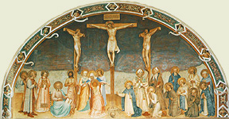
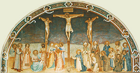

|  |
|---|
Textum Taurini 1953 editum
et automato translatum a Roberto Busa SJ in taenias magneticas
denuo recognovit Enrique Alarcón atque instruxit


|  |
|---|


[85461] Catena in Mt., cap. 11 l. 1 Rabanus. Postquam discipulos suos dominus ad praedicandum mittens, praemissis verbis eos instruxit, ipse etiam quod docuerat verbis, factis implevit, offerens primam praedicationem Iudaeis; et hoc est quod dicitur et factum est cum consummasset Iesus. Dicit autem transiit inde. Chrysostomus in Matth. Quia enim eos misit, subtraxit seipsum dans locum eis et tempus facere quae iniunxerat: eo enim praesente et curante, nullus ad discipulos vellet accedere. Remigius. Pulchre autem de speciali doctrina, qua scilicet apostolos instruxerat, ad generalem transit, in civitatibus praedicando; quia in hoc de caelis ad terras descendit, ut omnes illuminaret: in quo facto monentur etiam sancti praedicatores ut omnibus prodesse studeant.
[85462] Catena in Mt., cap. 11 l. 2 Glossa. Posuerat supra Evangelista quomodo per miracula et doctrinam Christi tam discipuli quam turbae instruebantur; nunc ostendit quomodo haec instructio usque ad discipulos Ioannis perveniret, qui ad Christum aemulationem habere videbantur: unde dicit Ioannes autem cum audisset in vinculis opera Christi, mittens duos ex discipulis suis, ait illi: tu es qui venturus es, an alium expectamus? Gregorius in Evang. Quaerendum autem nobis est: Ioannes propheta, et plusquam propheta, qui venientem ad Baptismum dominum ostendit, dicens: ecce agnus Dei, ecce qui tollit peccata mundi, cur in carcere positus mittens discipulos requirit tu es qui venturus es, an alium expectamus? Tamquam si ignoraret quem ostenderat; et an ipse sit nesciat quem ipse prophetando, baptizando, ostendendo, ipsum esse clamaverat. Ambrosius super Lucam. Nonnulli autem hoc sic intelligunt. Magnum quidem ita prophetam esse Ioannem, ut Christum agnosceret, annuntiaret remissionem peccatorum futuram; sed tamen, tamquam pium vatem, quem venturum crediderat, non credidisse moriturum. Non igitur fide, sed pietate dubitavit. Dubitavit etiam Petrus dicens: propitius tibi esto, domine: non fiat hoc. Chrysostomus in Matth. Sed non utique hoc habet rationem. Ioannes enim neque hoc ignorabat: sed hoc primum testatus est dicens: ecce agnus Dei, ecce qui tollit peccata mundi. Agnum enim vocans, crucem divulgat: nec aliter quam per crucem peccatum abstulit mundi. Qualiter autem maior propheta est hic si neque quae prophetarum sunt noscit? Etenim Isaias dicit: sicut ovis ad occisionem ductus est. Gregorius in Evang. Sed aliter haec quaestio solvitur, si gestae rei tempus pensatur. Ad Iordanis enim fluenta positus, quia ipse redemptor mundi esset, asseruit; missus vero in carcerem, an ipse veniat, requirit: non quia ipsum esse mundi redemptorem dubitat; sed quaerit, ut sciat si is qui per se in mundum venerat, per se etiam ad Inferni claustra descendat. Hieronymus. Unde non ait: tu es qui venisti? Sed tu es qui venturus es? Et est sensus: manda mihi, quia ad Inferna descensurus sum, utrum te etiam Inferis debeam nuntiare, an alium ad haec sacramenta missurus es? Chrysostomus in Matth. Sed qualiter et hoc habet rationem? Cuius enim gratia non dixit: tu es qui venturus es in Infernum? Sed simpliciter: qui venturus es? Quamvis et derisibilius videatur quod propter hoc ei dixerit, ut et illuc abiens praedicaret: praesens enim vita, gratiae tempus est; post obitum autem iudicium est et poena: quare in nullo opus erat praecursore illic. Sed aliter. Si infideles post mortem credentes essent salvandi, nullus peribit aliquando: omnes enim poenitebunt tunc, et adorabunt. Omne enim genu flectetur, caelestium, terrestrium, et Infernorum. Glossa. Considerandum autem est, quod non ideo Hieronymus et Gregorius dixerunt, quod Ioannes adventum Christi in Infernum praenuntiaturus esset, quia eius praedicatione aliqui non credentes converterentur ad fidem; sed ut iustis in expectatione Christi manentibus ex vicino adventu consolationem afferret. Hilarius in Matth. Certum est tamen quod qui venturum ut praecursor nuntiavit, consistentem ut propheta agnovit, adeuntem ut confessor veneratus est, eius abundanti scientiae error non obrepsit. Nec sane credi potest, spiritus sancti gratiam in carcere posito defuisse, cum apostolis virtutis suae lumen esset in carcere positis ministraturus. Hieronymus. Non ergo quasi ignorans interrogat, sed quomodo salvator interrogat ubi sit Lazarus positus; ut qui locum sepulcri indicabant, saltem sic pararentur ad fidem, ut viderent mortuum resurgentem; sic et Ioannes interficiendus ab Herode discipulos suos mittit ad Christum, ut per hanc occasionem videntes signa atque virtutes, crederent in eum, et magistro interrogante sibi discerent. Quod autem haberent discipuli Ioannis aliquid mordacitatis ex invidia adversus dominum, superior quoque interrogatio demonstravit, cum dixerunt: quare nos et Pharisaei ieiunamus frequenter, discipuli tui non ieiunant? Chrysostomus in Matth. Donec igitur Ioannes erat cum ipsis, suadebat eis continue de Christo: quia autem iam erat obiturus, amplius studium facit. Etenim formidabat, ne relinquat in discipulis suis perniciosi dogmatis conditionem, et maneant abiecti a Christo, cui et a principio omnes suos afferre studuit. Si autem dixisset eis: abite ad ipsum, quia melior me est, non utique persuasisset, sed aestimaretur humilia de se sentiens hoc dicere; et sic magis essent ei affixi. Quid igitur facit? Expectat ab eis audire quod Christus miracula facit. Neque omnes misit; sed duos quosdam, quos noverat fortassis aliis persuasibiliores existentes, ut insuspicabilis interrogatio fieret, et ex rebus ipsis discerent distantiam inter eum et Iesum. Hilarius in Matth. Ioannes igitur non suae, sed discipulorum ignorantiae consulit: ut enim scirent non alium a se praedicatum, ad opera eius intuenda discipulos suos misit, ut auctoritatem dictis suis illius opera conferrent; nec Christus alius expectaretur quam cui testimonium opera praestitissent. Chrysostomus in Matth. Idem Christus autem mentem noscens Ioannis, non dixit: quoniam ego sum, quia per hoc rursus obsisteret audientibus: excogitassent enim, etsi non dixissent, quod Iudaei ad ipsum dixerunt: tu de teipso testimonium perhibes. Et propter hoc a miraculis fecit eos discere, insuspicabilem doctrinam faciens et manifestiorem. Testimonium enim quod est a rebus, credibilius est testimonio quod est a verbis. Unde confestim curavit caecos et claudos et alios multos, non ut doceret Ioannem scientem, sed hos qui dubitabant: et ideo sequitur et respondens Iesus ait illis: euntes renuntiate Ioanni quae audistis et vidistis. Caeci vident, claudi ambulant, leprosi mundantur, surdi audiunt mortui resurgunt, pauperes evangelizantur. Hieronymus. Quod praemissis non minus est. Pauperes autem evangelizatos intellige, vel pauperes spiritu, vel certe opibus pauperes: ut nulla inter nobiles et ignobiles, inter divites et egenos in praedicatione distantia sit: haec magistri rigorem, haec praeceptoris comprobant veritatem, quando omnis apud eum qui salvare potest aequalis est. Chrysostomus in Matth. Quod autem ait: et beatus est qui non fuerit scandalizatus in me, internuntios percutit: quia enim scandalizabantur in ipso, dubitationem eorum non divulgans, et soli eorum conscientiae derelinquens, redargutionem eorum latenter induxit. Hilarius. Itaque cui rei Ioannes cavisset, ostendit dicens beatos eos in quibus aliquid in se scandali non fuisset: quia metu eius, scilicet ne scandalizarentur, discipulos suos Ioannes, ut Christum audirent, misit. Gregorius in Evang. Vel aliter. Infidelium mens grave in Christo scandalum pertulit, cum eum etiam post tot miracula morientem vidit: unde Paulus dicit: nos praedicamus Christum crucifixum, Iudaeis quidem scandalum. Quid ergo est dicere: beatus qui non fuerit scandalizatus in me, nisi aperta voce abiectionem mortis suae humilitatemque signare? Ac si patenter dicat: mira quidem facio, sed abiecta perpeti non dedignor. Quia ergo moriendo te subsequor, cavendum valde est hominibus ne in me mortem despiciant qui signa venerantur. Hilarius. Praebetur etiam mystice in his quae in Ioanne gesta sunt, intelligentia amplior, ut propheta ipso conditionis suae genere prophetizaret, quia in eo forma legis lata est: Christum enim lex annuntiavit, et remissionem peccatorum praedicavit, et regnum caelorum spopondit; et Ioannes totum hoc opus legis explevit. Igitur, cessante iam lege (quae peccatis plebis inclusa, ne Christus posset intelligi, quasi vinculis et quasi carcere continebatur), ad Evangelia contuenda lex mittit, ut infidelitas fidem dictorum contempletur in factis. Ambrosius super Lucam. Et fortasse isti discipuli quos misit, sunt duo populi: unus qui ex Iudaeis credidit, alter qui ex gentibus.
[85463] Catena in Mt., cap. 11 l. 3 Chrysostomus in Matth. Quantum ad discipulos Ioannis, satis actum erat: certificati enim de Christo per signa quae viderant, recesserunt. Sed oportebat etiam turbas sanari, quae ex interrogatione discipulorum Ioannis multa inconvenientia subintellexerint, ignorantes mittentis consilium. Poterant utique dicere: qui tanta testatus est de Christo, aliter persuasus est nunc et dubitat utrum sit ipse. Numquid ergo altercans ad Iesum hoc dicit? Numquid timidior a carcere factus? Numquid vane et inaniter priora dixit? Hilarius in Matth. Ac ne illud quod immediate praemiserat, referri posset ad Ioannem, tamquam scandalizatus esset de Christo, subditur illis autem abeuntibus, coepit Iesus dicere ad turbas de Ioanne. Chrysostomus in Matth. Propter hoc autem abeuntibus eis, ut non videatur homini adulari. Corrigens autem et plebem, non ducit in medium suspicionem eorum, sed solutionem cogitationum eorum inducit, quae eos in dubitationem mittebant, demonstrans se nosse occulta. Neque enim dixit sicut Iudaeis: quis cogitatis mala? Etsi mala cogitaverint; non tamen ex malitia, sed ex ignorantia; unde non loquitur eis dure, sed respondet pro Ioanne, ostendens quod non excidit a priore opinione. Hoc autem docet, non solum proprio verbo, sed eorum testimonio; non tantum per ea quae dixerunt, sed per ea quae egerunt: ideoque ait quid existis in desertum videre? Ac si diceret: propter quid civitates dimittentes convenistis in desertum? Non enim plebs tanta cum tanto desiderio in eremum venisset, nisi magnum quemdam et mirabilem et petra solidiorem se videre existimans. Glossa. Non autem tunc exierant in desertum ad hoc ut viderent Ioannem: nec enim erat tunc in deserto, sed in carcere: sed praeteritum refert, quia frequenter exierat populus in desertum videre Ioannem, cum adhuc esset in deserto. Chrysostomus in Matth. Et vide quia, omnem aliam malitiam praetermittens, removet a Ioanne levitatem, de qua turbae dubitabant, dicens arundinem vento agitatam? Gregorius in Evang. Quod videlicet non asserendo, sed negando intulit. Arundinem quippe, mox ut aura contingit, in partem flectit; per quam carnalis animus designatur, qui mox ut favore et detractione tangitur, in partem quamlibet declinatur. Arundo ergo vento agitata Ioannes non erat, quem a status sui rectitudine nulla rerum varietas inflectebat. Ac si dominus diceret Hieronymus: numquid ob hoc existis in desertum ut videretis hominem calamo similem, qui omni vento circumfertur, et levitate mentis de eo ambigeret quem antea praedicaret? An forsitan stimulis invidiae contra me cogitur, et praedicatio eius vanam sectatur gloriam, ut ex ea quaerat lucra? Cur divitias cupiat? Ut affluat dapibus? Locustis vescitur et melle silvestri. An ut mollibus vestiatur? Pili camelorum sunt tegmen eius; et ideo subdit sed quid existis videre? Hominem mollibus vestitum? Chrysostomus in Matth. Vel aliter. Quod non sit Ioannes similis calamo mobili per vestrum studium significastis, scilicet in desertum exeuntes. Non tamen potest aliquis dicere, quod Ioannes quidem constans erat, sed postea lasciviae serviens factus est mobilis: sicut enim aliquis est iracundus natura, alius per infirmitatem longam, ita aliqui sunt mobiles per naturam, alii vero lasciviae serviendo mobiles fiunt. Ioannes autem neque natura mobilis erat; propter quod dixerat num existis videre arundinem vento agitatam? Neque lasciviae dans se ipsum, perdidit quam habebat excellentiam: quod enim non servierit lasciviae, monstrat stola, solitudo et carcer. Si enim vellet mollibus vestiri, non eremum inhabitasset, sed regum palatia: unde sequitur ecce qui mollibus vestiuntur, in domibus regum sunt. Hieronymus. Ex hoc ostenditur rigidam vitam et austeram praedicationem vitare debere aulas regum, et mollium hominum palatia declinare. Gregorius in Evang. Nemo autem existimet in luxu atque studio pretiosarum vestium peccata deesse: quia si hoc culpa non esset, nullo modo Ioannem dominus de vestimenti sui asperitate laudasset. Et nequaquam Petrus feminas a pretiosarum vestium appetitu compesceret, dicens: non in veste pretiosa. Augustinus de Doctr. Christ. Cum in omnibus talibus non usus rerum, sed libido utentis in culpa est. Quisquis enim rebus restrictius utitur quam se habent mores eorum cum quibus vivit, aut temperans, aut superstitiosus est. Quisquis vero sic utitur, ut metas consuetudinis bonorum inter quos versatur excedat, aut aliquid significat, aut flagitiosus est. Chrysostomus in Matth. A loco autem et vestimentis, et a concursu hominum, eius moribus designatis, inducit iam et prophetam eum esse, dicens sed quid existis videre? Prophetam? Dico vobis etiam plus quam prophetam. Gregorius in Evang. Prophetae enim ministerium est ventura praedicere, non etiam demonstrare. Ioannes ergo plusquam propheta est: quia eum quem praecurrendo prophetaverat, etiam ostendendo nuntiabat. Hieronymus. In quo etiam ceteris prophetis maior est, et quia ad privilegium prophetale etiam Baptismi accessit praemium, ut suum dominum baptizaret. Chrysostomus. Deinde monstrat secundum quid est maior, dicens hic est enim de quo scriptum est: ecce mitto Angelum meum ante faciem tuam. Hieronymus. Ut enim meritorum Ioannis augmentum faceret, de Malachia testimonium infert, in quo etiam Angelus praedicatur. Angelum autem hic dici Ioannem non putemus naturae societate, sed officii dignitate; idest nuntium qui venturum dominum nuntiavit. Gregorius in Evang. Qui enim Graece Angelus, hic Latine nuntius dicitur. Recte ergo qui nuntiare supernum nuntium venerat, Angelus vocatur, ut dignitatem servet in nomine, quam explet in operatione. Chrysostomus. Monstrat igitur secundum quid est maior Ioannes prophetis, secundum id scilicet quod est prope Christum: et ideo dicit mitto ante faciem tuam, hoc est prope te: sicut enim qui prope currum regis incedunt, aliis sunt clariores, ita et Ioannes prope Christi praesentiam. Glossa. Deinde alii prophetae missi sunt ut adventum Christi annuntiarent; iste autem, ut praepararet viam ipsius: unde sequitur qui praeparabit viam tuam ante te: idest, pervia reddet tibi corda auditorum, poenitentiam praedicando et baptizando. Hilarius in Matth. Mystice autem desertum spiritu sancto vacuum est sentiendum, in quo habitatio Dei nulla sit; in arundine homo talis ostenditur de gloria saeculi vitae suae inanitate speciosus, in se autem fructu veritatis cavus, exterior placens, et nullus interior, ad omnem ventorum motum, idest, immundorum spirituum flatum, movendus, neque ad consistendi firmitatem valens, et animae medullis inanis. Veste autem, corpus quo induitur anima signatur, quod luxu ac lasciviis mollescit. In regibus transgressorum Angelorum nuncupatio est: hi enim saeculi sunt potentes, mundique dominantes. Ergo vestiti mollibus in domibus regum sunt; idest illos quibus per luxum fluida et dissoluta sunt corpora, patet esse Daemonum habitationem. Gregorius in Evang. Ioannes etiam mollibus vestitus non fuit, quia vitam peccantium non blandimentis fovit, sed rigore asperae invectionis increpavit, dicens: genimina viperarum, et cetera.
[85464] Catena in Mt., cap. 11 l. 4 Chrysostomus in Matth. Praemissa commendatione Ioannis ex prophetae testimonio, non hic stetit, sed iam sententiam propriam de ipso inducit, dicens amen dico vobis, non surrexit maior inter natos mulierum Ioanne Baptista. Rabanus. Ac si diceret: quid dicere per singula de commendatione Ioannis? Amen dico vobis, inter natos mulierum, et cetera. Inter natos, inquit, mulierum, non virginum: mulieres enim proprie corruptae vocantur. Si autem Maria aliquando mulier in Evangelio nuncupatur, sciendum est, interpretem, mulierem pro femina posuisse, sicut ibi: mulier, ecce filius tuus. Hieronymus. His ergo praefertur hominibus qui de mulieribus nati sunt et de concubitu viri, et non ei qui natus est ex virgine et spiritu sancto; quamvis in eo quod dicit non surrexit inter natos mulierum maior Ioanne Baptista, non ceteris prophetis et patriarchis cunctisque hominibus Ioannem praetulit, sed Ioanni ceteros exaequavit: non enim statim sequitur ut si alii maiores eo non sunt, ille maior aliorum sit. Chrysostomus super Matth. Sed tanta cum sit iustitiae altitudo ut in illa nemo possit esse perfectus nisi solus Deus, puto quia omnes sancti quantum ad subtilitatem divini iudicii invicem sibi inferiores sunt aut priores. Ex quo intelligimus quoniam qui maiorem se non habet, maior omnibus est. Chrysostomus in Matth. Ne autem rursus superabundantia laudum pariat aliquod inconveniens Iudaeis Ioannem praeferentibus Christo, convenienter hoc removet dicens qui autem minor est in regno caelorum hic maior est illo. Augustinus contra Advers. legis et Prophet. Argumentatur autem ex hoc haereticus ita, velut ratiocinando, tamquam Ioannes non pertineat ad regnum caelorum, et ob hoc multo minus ceteri prophetae illius populi, quibus maior est Ioannes. Haec autem verba domini duobus modis possunt intelligi: aut enim regnum caelorum appellavit hoc quod nondum accepimus, de quo in fine dicturus est: venite, benedicti patris mei, percipite regnum; et quia ibi sunt Angeli, quilibet in eis minor maior est quolibet iusto portante corpus quod corrumpitur. Aut si regnum caelorum intelligi voluit Ecclesiam, cuius filii sunt ab institutione generis humani usque nunc omnes iusti, dominus seipsum signavit: qui nascendi tempore minor erat Ioanne, maior autem divinitatis aeternitate et dominica potestate. Proinde secundum priorem expositionem, ita distinguitur: qui minor est in regno caelorum, ac deinde subinfertur maior est illo. Secundum hanc autem posteriorem, ita: qui autem minor est, ac deinde subinfertur in regno caelorum maior est illo. Chrysostomus in Matth. Dicit autem in regno caelorum, idest in spiritualibus, et universis quae sunt secundum caelum. Quidam autem dicunt quoniam de apostolis hoc dixit Christus. Hieronymus. Nos autem simpliciter intelligamus, quia omnis sanctus qui iam cum domino est, sit maior illo qui adhuc consistit in praelio: aliud est enim victoriae coronam possidere, aliud adhuc in acie dimicare.
[85465] Catena in Mt., cap. 11 l. 5 Glossa. Quia dixerat superius: qui minor est in regno caelorum, est maior Ioanne, ne videretur Ioannes a regno caelorum esse alienus, hoc removet subdens a die autem Ioannis Baptistae usque nunc regnum caelorum vim patitur, et violenti rapiunt illud. Gregorius in Evang. Per regnum caelorum supernum solium signatur, quo cum peccatores quolibet facinore polluti ad poenitentiam redeunt, et semetipsos corrigunt, quasi praedatores in locum alienum intrant et violenter regnum caelorum rapiunt. Hieronymus. Si autem primus Ioannes Baptista poenitentiam populis nuntiavit dicens: poenitentiam agite, appropinquabit enim regnum caelorum, convenienter a diebus illius regnum caelorum vim patitur et violenti rapiunt illud. Grandis est enim violentia, in terra nos esse generatos, et caelorum sedem quaerere, et possidere per virtutem quae non tenuimus per naturam. Hilarius in Matth. Vel aliter. Dominus apostolos ire ad oves perditas Israel iusserat; sed omnis haec praedicatio profectum publicanis et peccatoribus afferebat. Itaque vim regnum patitur, et violenti diripiunt: quia gloria Israel patribus debita. Prophetis nuntiata, a Christo oblata, fide gentium occupatur et rapitur. Chrysostomus in Matth. Vel rapiunt regnum Dei per fidem Christi omnes qui cum festinatione veniunt: unde dicit a diebus autem Ioannis usque nunc; et ita impellit et festinare facit ad fidem suam, simul autem et his quae antea dicta sunt a Ioanne opitulatur. Si enim usque ad Ioannem omnia completa sunt, ipse est qui venturus est: unde subdit omnes enim prophetae et lex usque ad Ioannem prophetaverunt. Hieronymus. Non quod post Ioannem excludat prophetas; legimus enim in actibus apostolorum et Agabum prophetizasse et quatuor virgines filias Philippi; sed quod lex et prophetae quos scriptos legimus, quicquid prophetizaverunt, de domino vaticinati sunt. Quando ergo dicitur usque ad Ioannem prophetaverunt, Christi tempus ostenditur; et quem illi dixerunt esse venturum, Ioannes venisse ostendit. Chrysostomus. Deinde aliam coniecturam sui adventus ponit, dicens et si vultis recipere, ipse est Elias, qui venturus est. Dicit dominus in Malachia: mittam vobis Eliam Thesbitem; et de isto dicit ecce ego mitto Angelum meum ante faciem tuam. Hieronymus. Elias ergo Ioannes dicitur, non secundum stultos philosophos, et quosdam haereticos, qui metempsychosin, idest animae ex uno in aliud corpus migrationem introducunt; sed quod, iuxta aliud testimonium Evangelii, venerit in spiritu et virtute Eliae, et eamdem spiritus sancti vel gratiam habuerit vel mensuram. Sed et vitae austeritas rigorque mentis Eliae et Ioannis pares sunt: uterque in eremo, uterque zona pellicea cingebatur: ille, quoniam regem Achab et Iezabel impietatis arguit, fugere compulsus est; iste, quia Herodis et Herodiadis illicitas arguit nuptias, capite truncatur. Chrysostomus in Matth. Et bene dixit si vultis recipere, libertatem ostendens, et voluntariam expetens mentem. Est enim ille hic, et hic ille: quia praecursores facti sunt utrique. Hieronymus. Hoc autem quod dictum est, ipse est Elias, mysticum esse, et egere intelligentia, sequens domini sermo demonstrat, dicens qui habet aures audiendi audiat. Remigius. Ac si diceret: qui habet aures cordis audiendi, idest intelligendi, intelligat: quia non dixit Ioannem Eliam esse in persona, sed in spiritu.
[85466] Catena in Mt., cap. 11 l. 6 Hilarius in Matth. Totus hic sermo infidelitatis opprobrium est, et de affectu superioris querimoniae descendit: quia insolens plebs per diversa sermonum genera docta non fuerit. Chrysostomus in Matth. Unde et interrogatione utitur, monstrans quoniam nihil quod deberet fieri ad salutem eorum, derelictum est, dicens cui autem similem aestimabo generationem istam? Glossa. Quasi dicat: tantus est Ioannes; sed vos nec sibi nec mihi voluistis credere: et ideo cui vos similes aestimabo? Per generationem accipit communiter et Iudaeos, et se cum Ioanne. Remigius. Mox autem sibi ipsi respondet, subiungens similis est pueris sedentibus in foro, qui clamantes coaequalibus dicunt: cecinimus vobis, et non saltastis; lamentavimus, et non planxistis. Hilarius in Matth. In pueris prophetae signantur, qui in simplicitate sensus, ut pueri, praedicaverunt, et in medio synagogae tamquam in publico fori conventu coarguunt, quod cantantibus sibi officio corporis non obsecundaverint, et quod dictis suis non paruerint: ad cantantium enim modum saltantium motus aptatur. Prophetae enim ad confessionem psallendi Deo provocaverunt, ut cantico Moysi tenetur, ut Isaiae, ut David. Hieronymus. Dicunt ergo cecinimus vobis et non saltastis: idest, provocavimus vos ut ad nostrum canticum bona opera faceretis, et noluistis. Lamentati sumus, et vos ad poenitentiam provocavimus; et nec hoc quidem facere voluistis, spernentes utramque praedicationem, tam exhortationis ad virtutes, quam poenitentiae post peccata. Remigius. Quid est autem quod dicit coaequalibus? Numquid infideles Iudaei coaequales erant sanctis prophetis? Sed hoc dicit, quoniam de una stirpe orti fuerunt. Hieronymus. Pueri etiam sunt de quibus Isaias loquitur: ecce ego et pueri mei quos dedit mihi dominus. Isti ergo pueri sedent in foro, ubi multa venalia sunt, et dicunt Chrysostomus in Matth.: cecinimus vobis, et non saltastis; hoc est, remissam vitam ostendi, et non persuasi estis; lamentavimus, et non planxistis: hoc est, Ioannes duram sustinuit vitam, et non attendistis. Non autem dicit ille illud et ego hoc, sed communiter: quia una intentio utriusque erat; unde sequitur venit enim Ioannes neque manducans neque bibens; et dicunt: Daemonium habet. Venit filius hominis, et cetera. Augustinus contra Faustum. Vellem autem ut mihi Manichaei dicerent quid manducabat et quid bibebat Christus, qui in comparatione Ioannis non manducantis neque bibentis, hic se dixit manducantem ac bibentem. Non enim dictum est quod Ioannes omnino non biberet; sed quod vinum et siceram non biberet: bibebat ergo aquam. Cibus autem eius non omnino nullus erat, sed locustae, et mel silvestre. Unde ergo dictus est non manducans neque bibens, nisi quia illo victu quo Iudaei utebantur, non utebatur? Hoc ergo dominus nisi uteretur, non in eius comparatione manducans bibensque diceretur. Mirum autem si non manducans dicitur qui locustas et mel comedit, et manducans dicitur qui pane et olere contentus est. Chrysostomus. Dicit ergo venit Iesus; ac si dicat: per contrariam viam venimus ego et Ioannes et idem fecimus: sicut si venatores per duas contrarias vias aliquod animal insequantur, ut in alterum incidat. Universum autem hominum genus ieiunium et duram viam admiratur; et propter hoc dispensatum est a prima aetate ita nutriri Ioannem, ut per hoc digna fide essent quae dicerentur ab ipso. Incessit siquidem dominus per hanc viam quando quadraginta diebus ieiunavit; sed tamen et aliter docuit quod sibi esset credendum; multo enim maius erat quod testaretur pro eo Ioannes qui per hanc viam incesserat, quam quod ipse per hanc viam incederet. Aliter Ioannes nihil plus ostendit praeter vitam et iustitiam; Christus autem et a miraculis testimonium habebat. Dimittens ergo Ioannem ieiunio fulgere, ipse contrariam incessit viam, ad mensam intrans publicanorum, et manducans et bibens. Hieronymus. Si ergo ieiunium vobis placet, cur Ioannes displicuit? Si saturitas, cur filius hominis? Quorum alterum Daemonium habentem, alterum voracem et ebrium nuncupastis. Chrysostomus. Qualem igitur iam excusationem accipient? Propter hoc subdit et iustificata est sapientia a filiis suis: hoc est, etsi vos persuasi non estis, sed me iam incusare non habetis: quod et de patre ait propheta: ut iustificeris in sermonibus tuis: etsi enim nihil in vobis expleatur a procuratione Dei, quae est circa vos; omnia quae sunt ex parte sua, complet, ut inverecundis neque umbram relinquat ingratae dubitationis. Hieronymus. Iustificata est ergo sapientia a filiis suis; idest, Dei dispensatio atque doctrina, vel ipse Christus, qui est Dei virtus et Dei sapientia, iuste fecisse, ab apostolis suis filiis comprobatus est. Hilarius in Matth. Est autem ipsa sapientia non ex effectu, sed ex natura. Plures enim dictum apostolicum, quod ait: Christum Dei sapientiam et Dei virtutem, his modis solent eludere, quod in eo ex virgine creando efficax Dei sapientia et virtus extiterit. Sed ne tale posset intelligi, ipsum se sapientiam nuncupavit, eam in se, non quae sunt eius ostendens. Non enim idem opus virtutis et virtus; et efficiens discernitur ab effectu. Augustinus de quaest. Evang. Vel iustificata est sapientia a filiis suis: quia sancti apostoli intellexerunt regnum Dei non esse in esca et potu, sed in aequanimitate tolerandi; quos nec copia sublevat, nec deprimit egestas; unde et Paulus dicebat: scio abundare et penuriam pati. Hieronymus. In quibusdam libris legitur iustificata est sapientia ab operibus suis: sapientia namque non quaerit vocis testimonium, sed operum. Chrysostomus in Matth. Si autem exempla vilia sunt de pueris, non mireris: ad imbecillitatem enim audientium loquebatur: sicut Ezechiel multa dicit exempla Iudaeis convenientia, Dei magnitudine indigna. Hilarius. Mystice autem Iudaeos nec Ioannis praedicatio inflexit, quibus et lex gravis visa est, potibus cibisque praescriptis, et difficilis et molesta peccatum in se, quod Daemonium nuncupat, habens: quia per observantiae difficultatem necesse eis esset in lege peccare: rursusque in Christo Evangelii praedicatio vitae libertate non placuit, per quam difficultates legis et onera laxata sunt, et ad eam publicani peccatoresque crediderunt. Atque ita tot et tantis admonitionum generibus frustra habitis, nec per gratiam iustificantur, et a lege sunt abdicati: et iustificata est sapientia a filiis suis, ab his scilicet qui regnum caelorum fidei iustificatione diripiunt, confitentes iustum sapientiae opus, quod munus suum ad fideles a contumacibus transtulerit.
[85467] Catena in Mt., cap. 11 l. 7 Glossa. Hucusque Iudaeos communiter increpaverat; nunc autem quasi nominatim quasdam civitates increpat, quibus specialiter praedicaverat, nec tamen converti volebant: unde dicitur tunc coepit exprobrare civitatibus in quibus factae sunt plurimae virtutes eius, quia non egissent poenitentiam. Hieronymus. Exprobratio enim civitatum Corozaim et Bethsaidae et Capharnaum, capituli huius titulo panditur, quod ideo exprobraverit eis, quia post factas virtutes et signa quamplurima, non egerint poenitentiam: unde subdit vae tibi, Corozaim, vae tibi, Bethsaida. Chrysostomus in Matth. Ut autem non dicas a natura ipsos esse malos, ponit nomen civitatis, scilicet Bethsaida, a qua quandoque processerunt apostoli; etenim Philippus et duo binarii principalium apostolorum hinc fuerunt: scilicet Petrus et Andreas, Iacobus et Ioannes. Hieronymus. Sed per hoc quod dicit vae, hae urbes Galilaeae a salvatore planguntur, quod post tanta signa atque virtutes non egerint poenitentiam. Rabanus. Corozaim autem, quae interpretatur mysterium meum, et Bethsaida, quae domus fructuum, vel domus venatorum dicitur, civitates sunt Galilaeae sitae in littore maris Galilaeae. Plangit ergo dominus civitates quae quondam mysterium Dei tenuerunt, et virtutum iam fructum gignere debuerunt, et in quas spiritales venatores sunt missi. Hieronymus. Et praeferuntur eis Tyrus et Sidon urbes idololatriae et vitiis deditae; et ideo sequitur quia si in Tyro et Sidone factae essent virtutes quae factae sunt in vobis, olim in Cilicio et cinere poenitentiam egissent. Gregorius Moralium. In Cilicio quidem asperitas, quae punctio peccatorum, in cinere autem pulvis ostenditur mortuorum: et idcirco utrumque hoc adhiberi ad poenitentiam solet, ut in punctione Cilicii cognoscamus quid per culpam fecimus, et in favilla cineris perpendamus quid per iudicium facti sumus. Rabanus. Tyrus autem et Sidon sunt urbes Phoenicis. Interpretatur autem Tyrus angustia, et Sidon venatio; et significat gentes quas venator Diabolus in angustia peccatorum comprehendit, sed salvator Iesus per Evangelium absolvit. Hieronymus. Quaerimus autem ubi scriptum sit quod in Corozaim et Bethsaida dominus signa fecerit. Supra legimus: et circuibat civitates omnes et vicos, curans omnem infirmitatem, et reliqua; inter ceteras ergo urbes et viculos existimandum est in Corozaim et in Bethsaida dominum signa fecisse. Augustinus de bono Persev. Non ergo verum est quod his temporibus et his locis Evangelium eius praedicatum non est, in quibus tales omnes futuros esse praesciebat, quales multi in eius corporali praesentia fuerunt, qui in eum nec suscitatis ab eo mortuis credere voluerunt. Ecce enim dominus attestatur quod Tyrii et Sidonii acturi essent magnae humilitatis poenitentiam, si in eis facta essent divinarum signa virtutum. Porro si etiam secundum facta quae facturi essent si viverent, mortui iudicantur; profecto quia fideles futuri erant isti, si eis cum tantis miraculis Evangelium fuisset praedicatum, non sunt utique puniendi, et tamen in die iudicii punientur: sequitur enim verumtamen dico vobis, et cetera. Severius ergo punientur illi, isti remissius. Hieronymus. Quod ideo est, quia Tyrus et Sidon naturalem tantum legem calcaverant: istae vero civitates post transgressionem naturalis legis et scriptae, etiam signa quae apud eos facta sunt, parvi duxerunt. Rabanus. Impletum autem hodie videmus dictum salvatoris: quia scilicet Corozaim et Bethsaida praesente domino credere noluerunt; Tyrus autem et Sidon, postea evangelizantibus discipulis crediderunt. Remigius. Capharnaum autem metropolis erat Galilaeae, et insignis civitas illius provinciae: et ideo dominus specialiter mentionem illius facit, dicens et tu, Capharnaum, numquid usque in caelum exaltaberis? Usque ad Infernum descendes. Hieronymus. In altero exemplari reperimus: et tu, Capharnaum, quae usque ad caelum exaltata es, usque ad Inferna descendes; et est duplex intelligentia. Vel ideo ad Inferna descendes, quia contra praedicationem meam superbissime restitisti; vel ideo quia exaltata usque in caelum meo hospitio, et meis signis atque virtutibus tantum habens privilegium, maioribus plecteris suppliciis, quod his quoque credere noluisti. Remigius. Non solum autem Tyri et Sidonis, sed ipsa Sodomorum et Gomorrhaeorum fuerunt levia peccata per comparationem: et ideo sequitur quia si in Sodomis factae essent virtutes quae factae sunt in te, forte mansissent usque in hunc diem. Chrysostomus in Matth. In quo augetur eorum accusatio: etenim maxima malitiae demonstratio est, cum non solum his qui tunc erant, sed his qui unquam fuerant mali, apparent deteriores. Hieronymus. In Capharnaum autem, quae interpretatur villa pulcherrima, condemnatur Ierusalem, cum dicitur per Ezechielem: iustificata est Sodoma ex te. Remigius. Ideo autem dominus, qui omnia novit, in hoc loco verbum dubitativum posuit, scilicet forte, ut demonstraret quia liberum arbitrium concessum est hominibus. Sequitur verumtamen dico vobis, quia terrae Sodomorum remissius erit in die iudicii quam vobis. Et sciendum est, quod nomine civitatis vel terrae, non aedificia vel domorum parietes dominus increpat, sed homines in eis commorantes; secundum speciem tropi, quae est metonymia, in qua per hoc quod continet id quod continetur ostenditur. Per hoc autem quod dicit remissius erit in die iudicii, aperte demonstrat quia diversa sunt supplicia in Inferno, sicut et diversae sunt mansiones in regno caelorum. Hieronymus. Quaerat autem prudens lector, et dicat: si Tyrus et Sidon et Sodoma potuerunt agere poenitentiam ad praedicationem salvatoris, signorumque miracula, non sunt in culpa, quia non crediderunt; sed vitii silentium in eo est qui acturis poenitentiam noluit praedicare. Ad quod facilis et aperta est responsio: ignorare nos iudicia Dei, et singularium eius dispensationum sacramenta nescire. Propositum fuerat domino Iudaeae fines non excedere, ne iustam Pharisaeis et sacerdotibus occasionem persecutionis daret: unde et apostolis praecepit: in viam gentium ne abieritis. Corozaim et Bethsaida damnantur, quod praesente domino credere noluerunt; Tyrus et Sidon iustificantur, quod apostolis illius crediderunt. Non quaeras tempora, cum credentium intuearis salutem. Remigius. Solvitur autem et aliter. Fortassis erant plurimi in Corozaim et Bethsaida qui credituri erant; et erant multi in Tyro et Sidone qui non erant credituri; et ideo non erant digni Evangelio. Dominus ergo ideo habitatoribus Corozaim et Bethsaidae praedicavit, ut illi qui credituri erant, crederent; et habitatoribus Tyri et Sidonis praedicare noluit, ne forte illi qui non erant credituri, contemptu Evangelii deteriores facti atrocius punirentur. Augustinus de bono Persev. Quidam autem disputator Catholicus non ignobilis hunc Evangelii locum sic exposuit ut diceret, praescisse dominum Tyrios et Sidonios a fide fuisse postea recessuros, cum factis apud se miraculis credidissent; et misericordia potius non eum illic ista fecisse, quoniam graviori poenae obnoxii fierent, si fidem quam tenuerant reliquissent, quam si eam nullo tempore tenuissent. Vel aliter. Praescivit profecto Deus beneficia sua, quibus nos liberare dignatur. Haec autem est praedestinatio sanctorum, praescientia scilicet et praeparatio beneficiorum Dei, quibus certissime liberantur quicumque liberantur. Ceteri autem non nisi in massa perditionis iusto divino iudicio relinquuntur, ubi Tyrii relicti sunt et Sidonii, qui etiam credere poterant, si multa Christi signa vidissent; sed quoniam ut crederent non eis erat datum, et unde crederent est negatum. Ex quo apparet habere quosdam in ipso ingenio divinum naturaliter munus intelligentiae, quo moveantur ad fidem, si congrua suis mentibus vel audiant verba vel signa conspiciant: et tamen si Dei altiore iudicio a perditionis massa non sunt gratiae praedestinatione discreti, nec ipsa eis adhibentur vel dicta divina vel facta, per quae possent credere, si audirent utique talia vel viderent. In eadem perditionis massa relicti sunt etiam Iudaei, qui non potuerunt credere factis in conspectu suo tam magnis clarisque virtutibus. Cur enim non poterant credere, non tacuit Evangelium dicens: dum autem tanta signa fecisset coram eis, non poterant credere, quia dixit Isaias: excaecavi oculos illorum, et induravi cor eorum. Non erant ergo sic excaecati oculi nec sic induratum cor Tyriorum et Sidoniorum: quia credidissent, si qualia viderunt isti, signa vidissent. Sed nec illis profuit quod poterant credere quia praedestinati non erant, nec istis obfuisset quod non poterant credere, si ita praedestinati essent ut eos caecos dominus illuminaret, et induratis cor lapideum vellet auferre. Augustinus de Cons. Evang. Hoc autem quod hic dicitur, etiam Lucas commemorat, continuatim cuidam sermoni domini etiam hoc ex ipsius ore coniungens; unde magis videtur ipse hoc ordine illa commemorare quo a domino dicta sunt; Matthaeus autem suae recordationis ordinem tenuisse. Aut illud quod Matthaeus ait tunc coepit exprobrare civitatibus, sic accipiendum putant ut punctum ipsum temporis voluisse credatur exprimere, in hoc quod est tunc; non autem ipsum tempus aliquanto latius quo hic multa gerebantur et dicebantur. Quisque ergo hoc credit, credat hoc esse bis dictum. Cum enim apud unum Evangelistam inveniantur quaedam quae bis dixerat dominus, sicut apud Lucam de non tollenda pera in via; quid mirum si aliquid aliud bis dictum sigillatim a singulis dicitur eodem ordine quo dictum est? Et ideo diversus ordo apparet in singulis: quia et tunc quando ille, et tunc quando iste commemorat, dictum est.
[85468] Catena in Mt., cap. 11 l. 8 Chrysostomus super Matth. Quia sciebat dominus multos de superiori quaestione dubitaturos, scilicet quod Iudaei Christum non receperunt, quem gentilitas tam prona suscepit, respondet his cogitationibus eorum; et ideo dicit respondens Iesus dixit: confiteor tibi, pater domine caeli et terrae. Glossa. Idest, qui facis caelos, et relinquis in terrenitate quos vis. Vel ad litteram. Augustinus de Verb. Dom. Si Christus dixit confiteor, a quo longe est omne peccatum, confessio non est solius peccatoris, sed aliquando etiam laudatoris. Confitemur ergo sive laudantes Deum, sive accusantes nosmetipsos. Dixit ergo confiteor tibi; idest, laudo te, non accuso me. Hieronymus. Audiant ergo qui salvatorem non natum, sed creatum calumniantur, quod patrem suum vocet caeli et terrae dominum. Si enim et ipse creatura est, et creatura conditorem suum patrem appellare potest, stultum fuit non et sui, et caeli, et terrae dominum, vel patrem similiter appellare. Gratias autem agit, quod apostolis adventus sui aperuerit sacramenta, quae ignoraverunt Scribae et Pharisaei, qui sibi sapientes videntur et in conspectu suo prudentes: et ideo sequitur quia abscondisti haec a sapientibus et prudentibus, et revelasti ea parvulis. Augustinus de Verb. Dom. Nomine sapientum et prudentum superbos intelligi posse ipse exposuit, cum ait revelasti ea parvulis: quid enim est parvulis, nisi humilibus? Gregorius Moralium. Quod enim non subiungit: revelasti ea stultis, sed parvulis, tumorem se damnasse innuit, non acumen. Chrysostomus in Matth. Vel dicens sapientes, non veram sapientiam dicit, sed eam quam videbantur Scribae et Pharisaei ab eloquentia habere. Propter hoc neque dixit: revelasti ea stultis, sed parvulis, idest informibus aut rusticis; in quo erudit nos per omnia ab elatione erui, humilitatem autem zelare. Hilarius in Matth. Caelestium ergo verborum arcana atque virtutes sapientibus absconduntur, et parvulis revelantur; parvulis malitia, non sensu; sapientibus vero stultitiae suae praesumptione, non sapientiae causa. Chrysostomus in Matth. Revelatum autem esse his, dignum est laetitia; occultari autem his, non laetitia, sed lacrymis dignum est. Non ergo propter hoc laetatur, sed quoniam quae sapientes non cognoverunt, cognoverunt hi. Hilarius. Facti autem huius aequitatem dominus paternae voluntatis iudicio confirmat; ut qui indignantur parvuli in Deo fieri, stulti deinceps in sapientia sua fiant: et ideo subditur ita, pater, quoniam sic placitum fuit ante te. Gregorius Moralium. Quibus verbis exempla humilitatis accipimus, ne temere discutere superna consilia de aliorum vocatione, aliorum vero repulsione praesumamus: ostendens quod iniustum esse non potest quod placuit iusto. Hieronymus. In his etiam verbis blandientis affectu loquitur ad patrem, ut coeptum in apostolis compleatur beneficium. Chrysostomus in Matth. Haec autem quae dominus discipulis dixit, studiosiores eos fecerunt: quia enim consequens erat eos de se magna sapere, quia Daemones abigebant, ideo hic eos reprimit: revelatio enim erat quod eis factum est, non illorum studium; ideoque Scribae, sapientes et prudentes existimantes se esse, exciderunt propter proprium tumorem; unde si propter hoc ab eis abscondita sunt Dei mysteria: timete, dicit, et vos, et manete parvuli: hoc enim fecit vos revelatione potiri. Sicut autem cum Paulus dicit: tradidit illos Deus in reprobum sensum, non hoc dicit inducens Deum hoc agentem, sed illos qui causam tribuerunt, ita et hic abscondisti haec a sapientibus et prudentibus. Et propter quid abscondita sunt ab illis? Audi Paulum dicentem quoniam quaerentes propriam iustitiam statuere, iustitiae Dei non sunt subiecti.
[85469] Catena in Mt., cap. 11 l. 9 Chrysostomus in Matth. Quia dixerat: confiteor tibi, pater, quoniam abscondisti haec a sapientibus, ut non existimes quoniam ita gratias agit patri, sicut si ipse sit hac virtute privatus, consequenter adiungit omnia mihi tradita sunt a patre meo. Cum autem audieris quoniam tradita sunt, nihil humanum suspiceris: ut enim non duos deos ingenitos esse aestimes, hanc ponit dictionem. Simul enim cum genitus est, omnium dominator fuit. Hieronymus. Alioquin si iuxta nostram fragilitatem sentire volumus, cum coeperit habere qui accepit, incipiet non habere qui dedit. Vel tradita sibi omnia, non caelum et terra et elementa intelligenda sunt, et cetera quae ipse fecit et condidit; sed hi qui per filium accessum habent ad patrem. Hilarius. Vel hoc dixit ne quid in illo minus quam quod in Deo est, aestimaretur. Augustinus contra maximum. Nam si minus habet in potestate aliquid quam pater, non sunt eius omnia quae habet pater: gignendo enim dedit pater potentiam filio, sicut omnia, quae habet in substantia sua, gignendo dedit ei quem genuit de substantia sua. Hilarius in Matth. Deinde in mutua cognitione patris et filii dat intelligere non aliud in filio quam quod in patre extitisse: sequitur enim et nemo novit filium nisi pater, neque patrem quis novit nisi filius. Chrysostomus in Matth. Ex eo enim quod solus patrem novit, latenter ostendit eiusdem se esse substantiae; ac si diceret: quid mirum est, si omnium sum dominator, cum aliquid aliud maius habeam, scilicet scire patrem, et eiusdem esse substantiae? Hilarius in Matth. Eamdem enim utriusque in mutua cognitione docet esse substantiam; cum qui filium cognosceret, patrem quoque cogniturus esset in filio, quia omnia ei a patre sunt tradita. Chrysostomus super Matth. Cum autem dicat neque patrem aliquis cognoscit nisi filius, hoc ait non quoniam eum omnes omnino ignorent, sed quoniam cognitione qua ipse eum novit, nullus eum scit; quod et de filio dicendum est. Neque etiam de ignoto quodam Deo hoc dixit, sicut Marcion ait. Augustinus de Trin. Denique propter substantiae inseparabilitatem sufficienter aliquando nominatur vel solus pater vel solus filius: nec inde separatur utriusque spiritus, qui proprie dicitur spiritus veritatis. Hieronymus. Erubescat ergo Eunomius haereticus tantam sibi notitiam patris et filii quantam ad alterutrum inter se habent, vindicans. Quod si inde contendit, et suam consolatur insaniam, quia sequitur et cui voluerit filius revelare; aliud est naturae aequalitate nosse quod noveris, aliud revelantis dignatione. Augustinus de Trin. Revelatur autem pater per filium, idest per verbum suum. Si enim hoc verbum quod nos proferimus temporale et transitorium, et seipsum ostendit, et illud de quo loquimur, quanto magis verbum Dei, per quod facta sunt omnia, quod ita ostendit patrem sicuti est pater, quia et ipsum ita est et hoc est quod pater? Augustinus de quaest. Evang. Cum autem diceret nemo novit filium nisi pater, non dixit: et cui voluerit pater filium revelare; sed cum diceret nemo novit patrem nisi filius, addidit et cui voluerit filius revelare: quod non ita intelligendum est quasi filius a nullo possit agnosci nisi a patre solo, pater autem non solum a filio, sed etiam ab eis quibus revelaverit filius: sic enim potius dictum est, ut intelligamus patrem et ipsum filium per filium revelari, quia ipse est mentis nostrae lumen; et quod postea intulit et cui voluerit filius revelare, non tantum patrem, sed etiam filium accipiamus: ad totum enim quod dixit, illatum est: verbo enim suo se pater declarat; verbum autem non solum id quod per verbum declaratur, sed etiam seipsum declarat. Chrysostomus super Matth. Si ergo patrem revelat, et seipsum revelat. Sed hoc quidem ut manifestum dimisit; illud autem posuit, quia scilicet poterat esse dubium. Per hoc etiam instruit quod adeo concordat patri quod non est possibile aliquem venire ad patrem nisi per filium: hoc enim maxime scandalizabat, quod videbatur Deo contrarius; et ideo per omnia hoc destruere studuit.
[85470] Catena in Mt., cap. 11 l. 10 Chrysostomus in Matth. Per ea quae dicta sunt, in desiderium sui discipulos constituerat, ostendens ineffabilem suam virtutem; nunc autem eos ad se vocat, dicens venite ad me, omnes qui laboratis et onerati estis. Augustinus de Verb. Dom. Quare enim omnes laboramus, nisi quia sumus homines mortales, lutea vasa portantes, quae faciunt invicem angustias? Sed si angustiantur vasa carnis, dilatentur spatia caritatis. Ad quid ergo dicit venite ad me, omnes qui laboratis, nisi ut non laboretis? Hilarius in Matth. Legis etiam difficultatibus laborantes et peccatis saeculi oneratos ad se advocat. Hieronymus. Gravia enim esse onera peccati, et Zacharias propheta testatur iniquitatem dicens sedere super talentum plumbi. Et Psalmista complevit: iniquitates meae aggravatae sunt super me. Gregorius Moralium. Asperum etiam iugum et durum servitutis pondus est subesse temporalibus, ambire terrena, retinere labentia, velle stare in non stantibus, appetere quidem transeuntia, sed cum transeuntibus nolle transire. Dum enim contra votum cuncta fugiunt, quae prius mentem ex desiderio adeptionis afflixerant, post ex pavore amissionis premunt. Chrysostomus in Matth. Non autem dicit: venite ille et ille; sed omnes qui in sollicitudinibus, qui in tristitiis, qui in peccatis estis; non ut expetam noxas, sed ut solvam peccata. Venite, non quoniam indigeo vestra gloria, sed quia volo vestram salutem: unde dicit et ego reficiam vos; non dixit: salvabo solum; sed, quod multo amplius erat, reficiam vos; idest, in omni quiete constituam. Rabanus. Non solum exonerabo, sed interna refectione saturabo. Remigius. Venite, dicit, non pedibus, sed moribus; non corpore, sed fide. Iste namque est spiritualis accessus, quo quisque Deo appropinquat; et ideo sequitur tollite iugum meum super vos. Rabanus. Iugum Christi est Evangelium Christi, quod Iudaeos et gentes in unitate fidei coniungit et sociat. Hoc autem super nos iubemur sumere, idest in honore habere, ne forte subtus ponentes, idest illud prave contemnentes, lutulentis pedibus vitiorum conculcemus: unde subditur discite a me. Augustinus de Verb. Dom. Non mundum fabricare, non in ipso mundo miracula facere; sed quia mitis sum et humilis corde. Magnus esse vis? A minimo incipe. Cogitas magnam fabricam constituere celsitudinis? De fundamento prius cogita humilitatis. Et quanto quisque vult superponere maius aedificium, tanto altius fodiat fundamentum. Quo autem perventurum est cacumen nostri aedificii? Usque ad conspectum Dei. Rabanus. Discendum ergo nobis est a salvatore nostro ut simus mites moribus et humiles mentibus: neminem laedamus, neminem contemnamus, et virtutes quas foris ostendimus in opere, intus teneamus in corde. Chrysostomus in Matth. Et ideo incipiens divinas leges, ab humilitate incipit; et maximum praemium ponit, dicens et invenietis requiem animabus vestris. Hoc maximum est praemium: non enim alteri efficeris utilis solum, sed teipsum requiescere facis; et ante futura hanc tibi dat promissionem; in futuro autem perpetua gaudebis requie. Chrysostomus. Et ne formidarent quia dixerat onus et iugum, subdit iugum enim meum suave est, et onus meum leve. Hilarius. Iugi autem suavis et levis oneris blandimenta proponit, ut credentibus eius boni scientiam praestet quod ipse solus novit in patre. Gregorius Moralium. Quid grave mentis nostrae cervicibus imponit qui vitare omne desiderium quod perturbat praecipit, qui declinare laboriosa mundi huius itinera monet? Hilarius in Matth. Et quid iugo ipso suavius, quid onere levius? Probatiorem fieri, scelere abstinere, bonum velle, malum nolle, amare omnes, odisse nullum, aeterna consequi, praesentibus non capi, nolle inferre alteri quod sibi perpeti sit molestum. Rabanus. Sed quomodo iugum Christi suave, cum supra dicatur: arcta est via quae ducit ad vitam? Sed quod angusto initio incipitur, processu temporis ineffabili dilectionis dulcedine dilatatur. Augustinus de Verb. Dom. Item qui iugum domini intrepida cervice subierunt, tam difficilia pericula patiuntur, ut non a laboribus ad quietem, sed a quiete ad laborem vocari videantur. Sed profecto aderat spiritus sanctus, qui in exterioris hominis corruptione interiorem renovaret de die in diem; et gustata requie spirituali in affluentia deliciarum Dei in spe futurae beatitudinis, omnia praesentia deliniret aspera, et omnia gravia relevaret. Secari et uri se homines patiuntur, ut dolores non aeterni, sed aliquanto diuturnioris ulceris, acriorum dolorum pretio redimantur. Quibus tempestatibus vel poenis importuni sunt mercatores, ut divitias perituras acquirant? Sed qui has non amant, eadem gravia patiuntur; qui vero amant, eadem quidem, sed non gravia patiuntur. Omnia enim saeva et immania, prorsus facilia et prope nulla efficit amor; quanto ergo facilius ad veram beatitudinem caritas facit quod ad miseriam, quantum potuit, cupiditas fecit? Hieronymus. Quomodo etiam levius est lege Evangelium, cum in lege homicidium et adulterium, in Evangelio ira concupiscentiaque puniantur; in lege enim multa praecepta sunt, quae apostolus non posse compleri plenissime docet: in lege opera requiruntur; in Evangelio voluntas quaeritur, quae etsi effectum non habuerit, tamen praemium non amittit. Evangelium ea praecipit quae possumus, ne scilicet concupiscamus: hoc in nostro arbitrio est; lex cum voluntatem non puniat, punit effectum, ne adulterium facias. Finge in persecutione aliquam virginem prostitutam: haec apud Evangelium, quia voluntate non peccat, virgo suscipitur; in lege quasi corrupta repudiatur.
[85471] Catena in Mt., cap. 12 l. 1 Glossa. Narrata praedicatione cum miraculis unius anni ante quaestionem Ioannis factis, transit ad ea quae facta sunt in alio anno, scilicet post mortem Ioannis, quando iam in omnibus Christo contradicitur; unde dicitur in illo tempore abiit Iesus per sata sabbato. Augustinus de Cons. Evang. Hoc autem quod hic sequitur, sine ulla repugnantiae quaestione commemoratur a Marco et a Luca; sed illi non dicunt in illo tempore: unde fortassis Matthaeus rei gestae hic ordinem tenuit; illi autem recordationis suae: nisi latius accipiatur quod dictum est, in illo tempore, idest quo haec multa et diversa gerebantur; unde concipitur ista omnia post mortem Ioannis completa esse. Cum enim Ioannes discipulos suos ad Christum misisset, creditur post paululum decollatus fuisse: unde cum dicitur in illo tempore, interminatum tempus ponere videtur. Chrysostomus in Matth. Quare autem per sata sabbato eos ducebat qui omnia praescivit, nisi quia volebat solvere sabbatum? Volebat quidem, sed non simpliciter; ideoque non sine causa id solvit, sed dans occasionem rationabilem, ut et legem cessare faciat, et legem non offendat: et ideo hic, ut Iudaeos mitiget, naturae necessitatem praemittit; et hoc est quod dicitur discipuli autem eius esurientes coeperunt vellere spicas, et manducare. Quamvis in peccatis quae manifesta sunt, nulla sit excusatio: neque enim occidens, ad sui excusationem potest furorem praetendere, neque qui adulterat, concupiscentiam, sed nec ullam aliam causam, hic tamen famem inducens, discipulos ab omni accusatione liberat. Hieronymus. Ut autem in alio Evangelista legimus, propter nimiam importunitatem, nec vescendi quidem habebant locum; et ideo quasi homines esuriebant. Quod autem segetum spicas manibus confricant, et in eisdem consolantur, vitae austerioris indicium est; non praeparatas epulas, sed simplicem cibum quaerentium. Chrysostomus in Matth. Tu autem admirare discipulos, qui ita erant oppressi quod nullam corporalium habebant curam, sed contemnebant carnalem mensam; et fame oppugnabantur, nec tamen desistebant a Christo: nisi enim eos cogeret vehementer esuries, nequaquam hoc fecissent. Quid autem Pharisaei ad hoc dicerent, subditur Pharisaei autem videntes, dixerunt ei: ecce discipuli tui faciunt quod non licet facere sabbatis. Augustinus de Oper. Monach. De sabbato autem potius quam de furto discipulos domini Iudaei calumniati sunt: quia populo Israel per legem praeceptum est ut in agris suis furem nullum tenerent, nisi qui secum aliquid vellet auferre: nam qui nihil aliud attigisset quam id quod comedisset, liberum impunitumque abire sinerent. Hieronymus. Nota vero quod primi apostoli salvatoris litteram sabbati destruunt adversus Ebionitas, qui cum ceteros recipiant apostolos, Paulum tamquam transgressorem legis repudiant. Deinde ad excusationem eorum subditur at ille dixit eis: non legistis quid fecerit David, quando esuriit? Ad confutandam siquidem calumniam Pharisaeorum, veteris recordatur historiae: quando David fugiens Saulem, venit in Nobe, et ab Abimelech sacerdote susceptus postulavit cibos, qui cum panes laicos non haberet, dedit eis consecratos panes, quibus non licebat vesci nisi solis sacerdotibus et Levitis: melius arbitratus de famis periculo homines liberare, quam Deo sacrificium offerre: hostia enim Deo placabilis est hominum salus. Opponit ergo dominus, et dicit: si et David sanctus est, et Abimelech pontifex a vobis non reprehenditur, et legis utrique mandatum probabili excusatione transgressi sunt, et fames in causa est, cur eamdem famem non probatis in apostolis quam probatis in ceteris? Quamquam et in hoc multa distantia sit. Isti spicas in sabbato manu confricant; illi panes comederunt leviticos, et ad sabbati solemnitatem accedebant Neomeniarum dies, quibus requisitus in convivio fugit ex aula regia. Chrysostomus in Matth. Excusans autem discipulos, David in medium adducit. Etenim multa prophetae huius erat gloria apud Iudaeos. Nec potest responderi, quod David propheta erat: quia nec propter hoc ei licebat, sed sacerdotibus solis. Tanto autem magis discipulos ab accusatione liberat, quanto maior invenitur qui hoc fecit, sed etsi David propheta erat, non tamen qui cum ipso erant. Hieronymus. Observa tamen, quod panes propositionis nec David nec pueri eius acceperunt, antequam mundos se a mulieribus esse responderint. Chrysostomus in Matth. Sed dicet aliquis: quid est exemplum hoc ad id quod quaeritur? Non enim David sabbatum transgressus est. Sed in hoc ostenditur Christi sapientia, qui exemplum fert sabbatis maius. Neque enim est aequale transgredi sabbati diem, quod multoties factum est, et sacram illam tangere mensam, quod nulli fas erat. Deinde rursus et aliter solvit, principaliorem inducens solutionem, cum dicit aut non legistis in lege, quia sabbatis sacerdotes in templo sabbatum violant, et sine crimine sunt? Hieronymus. Ac si diceret: calumniamini discipulos meos cur sabbato spicas triverint, famis necessitate cogente, cum ipsi sabbatum violetis in templo immolantes victimas, caedentes tauros, holocausta super lignorum struem incendio concremantes; et iuxta alterius Evangelii fidem, circumciditis parvulos in sabbato, ut dum aliam legem servare cupitis, sabbatum destruatis. Numquam autem leges Dei sibi contrariae sunt; et prudenter, ubi discipuli sui argui poterant transgressionis, et Abimelech et David dicit exempla sectantes; veram autem, et absque necessitatis obtentu, sabbati praevaricationem in ipsos refert qui calumniam fecerant. Chrysostomus in Matth. Ne autem mihi dicas, quoniam afferre in medium alium peccantem, non est erui ab accusatione: cum enim non accusatur qui fecit, excusatio fit circa id, quod factum est. Verum hoc non sufficit, sed quod maius est dixit quod sine crimine sunt. Vide autem quanta posuit. Locum, ubi dicit in templo; tempus, cum dicit sabbatis; legis remissionem, cum dicit violant, et non solum solvunt; et quod non solum liberantur a poena, sed a culpa liberati sunt: unde dicit sine crimine sunt. Neque autem hoc secundum simile est priori quod dixerat de David; illud enim et semel factum est, et a David non sacerdote, et necessitatis causa fuit; hoc autem secundum singulo sabbato, et a sacerdotibus, et secundum legem. Et ideo non secundum veniam, ut in primo exemplo; sed secundum legem sunt discipuli ab accusatione liberati. Sed numquid discipuli sunt sacerdotes? Immo sunt sacerdotibus maiores: ipse enim aderat, qui templi est dominus, qui veritas est, et non typus: et ideo subditur dico autem vobis, quia templo maior est hic. Hieronymus. Hic non pronomen, sed adverbium loci legendum est, quod maior templo sit locus qui dominum templi teneat. Augustinus de quaest. Evang. Notandum autem, unum exemplum datum esse regiae potestatis de David, alterum sacerdotalis, de his qui propter ministerium templi sabbata violant; ut multo minus ad ipsum evulsarum sabbato spicarum crimen pertineat, qui verus rex et verus sacerdos est. Chrysostomus in Matth. Deinde, quia grave audientibus videbatur esse quod dixerat, rursus convolat ad misericordiam, sermonem cum quadam vehementia inducens, cum dicit si autem sciretis quid est misericordiam volo, et non sacrificium, nunquam condemnassetis innocentes. Hieronymus. Quid autem est misericordiam volo, et non sacrificium, supra diximus. Quod autem dicit nunquam condemnassetis innocentes, de apostolis intelligendum est; et est sensus: si misericordiam comprobastis Abimelech, eo quod periclitantem fame David refocillavit, quare meos discipulos condemnatis? Chrysostomus in Matth. Vide autem rursus qualiter ad veniam ducens sermonem, discipulos rursus venia superiores ostendit in hoc quod dicit eos innocentes; quod quidem supra et de sacerdotibus dixerat. Deinde et aliam causam dicit quare sunt innocentes, dicens dominus est filius hominis etiam sabbati. Remigius. Filium autem hominis seipsum appellat; et est sensus: ille quem vos purum hominem putatis, Deus est omnium creaturarum dominus, et etiam sabbati; et ideo potest legem mutare pro sua voluntate, quia fecit eam. Augustinus contra Faustum. Discipulos autem suos vellere spicas sabbato non prohibuit, ut inde convinceret et praesentes Iudaeos et futuros Manichaeos, qui herbam non evellunt, ne homicidium perpetrent. Hilarius in Matth. Mystice autem in principio est contuendum, sermonem hunc ita coeptum esse: in illo tempore, quo scilicet Deo patri gratiam, data gentibus salute, confessus est. Ager autem mundus est, sabbatum otium est, seges crediturorum profectus in messem: ergo sabbato in agrum profectus in legis otio, domini progressus in hunc mundum est; esuries fames est salutis humanae. Rabanus. Spicas vellunt dum singulos homines a terrena intentione retrahunt; fricant dum a concupiscentia carnis mentes exuunt; grana comedunt dum emendatos in corpus Ecclesiae traiciunt. Augustinus de quaest. Evang. Nullus autem transit in corpus Christi nisi carnalibus spoliatus fuerit indumentis, secundum illud apostoli: exuite vos veterem hominem. Glossa. Sabbato hoc agunt, scilicet spe quietis aeternae, ad quam alios invitant. Rabanus. Item ambulant per sata cum domino, qui in Scripturarum meditatione delectantur; esuriunt dum panem vitae, idest Dei amorem, in eis invenire desiderant; vellunt spicas et terunt dum testimonia discutiunt, donec inveniant quod latebat in littera; et hoc, sabbato, dum a turbis cogitationibus vacant. Hilarius. Pharisaei, qui penes se clavem caelorum esse existimabant, illicita agere discipulos arguunt; quos dominus factorum, in quibus sub rerum argumento prophetiae ratio continetur, admonuit; atque ut ostenderet omnium rerum efficaciam, speciem futuri operis continere, adiecit si autem sciretis quid est misericordiam volo: opus enim salutis nostrae non in sacrificio legis, sed in misericordia est; et lege cessante, in Dei bonitate salvamur. Cuius rei donum si intellexissent, nunquam condemnassent innocentes, idest apostolos suos, quos insimulaturi erant transgressae legis invidia, cum sacrificiorum vetustate cessante, universis per eos misericordiae novitas subveniret.
[85472] Catena in Mt., cap. 12 l. 2 Hieronymus. Quia destructionem sabbati, qua discipulos arguebant, probabili exemplo excusaverat, ipsum calumniari volunt: unde dicitur et cum inde transisset, venit in synagogam eorum. Hilarius in Matth. Haec enim quae praemissa sunt, in campo dicta gestaque sunt, et post haec synagogam ingreditur. Augustinus de Cons. Evang. Posset autem putari eodem die factum et de spicis et de isto sanato, quoniam et sabbatum hic commemoratur; nisi Lucas aperuisset, alio sabbato factum fuisse. Proinde quod dicit Matthaeus et cum inde transisset venit in synagogam eorum, non quidem venit nisi cum inde transisset; sed post quot dies in synagogam eorum venerit posteaquam a segete illa transiit, an recte continuoque illuc ierit, non expressum est: ac per hoc locus datur narrationi Lucae, qui dicit alio sabbato huiusmodi manum fuisse sanatam. Hilarius. Ingresso autem synagogam, hominem aridae manus offerunt, interrogantes an curare sabbatis liceret, occasionem arguendi eum ex responsione quaerentes; unde sequitur et ecce homo manum habens aridam, et interrogabant eum dicentes: si licet sabbato curare? Chrysostomus in Matth. Non autem interrogant ut addiscant, sed ut accusent eum: unde sequitur ut accusarent eum. Quamvis et ipsum opus sufficeret si accusare volebant; sed et per verba volebant captionem invenire, maiorem copiam arguitionum sibi praeparantes. Hieronymus. Et interrogant, utrum liceat curare sabbatis: ut si non curaverit, crudelitatis aut imbecillitatis; si curaverit, transgressionis vitio eum accusent. Augustinus de Cons. Evang. Sed potest movere quomodo Matthaeus dixerit, quod ipsi interrogaverunt dominum si licet sabbato curare? Cum Marcus et Lucas illos potius a domino interrogatos esse perhibeant: licet sabbato bene facere, an male? Itaque intelligendum, quod illi prius interrogaverunt dominum si licet sabbato curare? Deinde intelligens cogitationes eorum, aditum accusandi quaerentium, constituit in medio illum quem erat sanaturus, et interrogavit quae Marcus et Lucas eum interrogasse commemorant: et tunc illis tacentibus, proposuit similitudinem de ove, et conclusit quod licet sabbato benefacere; unde sequitur ipse autem dixit illis: quis erit ex vobis homo, qui habens ovem unam? et cetera. Hieronymus. Ubi sic solvit propositam quaestionem, ut interrogantes avaritiae condemnaret. Si vos, inquit, in sabbato ovem et aliud quodlibet animal in foveam decidens eripere festinatis, non animali sed vestrae avaritiae consulentes, quanto magis ego hominem, qui multo melior est ove, debeo liberare? Rabanus. Competenti ergo exemplo solvit quaestionem eorum, ut eos ostendat sabbatum violare in opere cupiditatis, qui eum violare arguunt in opere caritatis; legem male interpretantes, qui dicunt in sabbato a bonis feriandum in quo a malis tantum feriandum est. Unde Levitico: opus servile non facietis in eis, hoc est peccatum. Sic in aeterna requie a malis tantum feriabitur, non a bonis. Augustinus de Cons. Evang. Proposita autem similitudine de ove, concludit, quod liceat sabbato benefacere, dicens itaque licet sabbatis benefacere. Chrysostomus in Matth. Intende autem qualiter varias excusationes de solutione sabbati inducit. Sed quia iam insanabiliter aegrotabat, ad opus processit; unde sequitur tunc ait homini: extende manum tuam; et extendit, et restituta est sanitati sicut altera. Hieronymus. In Evangelio quo utuntur Nazaraei et Ebionitae (quod nuper in Graecum de Hebraico sermone transtulimus, et quod vocatur a plerisque Matthaei authenticum) homo iste qui aridam habet manum, caementarius scribitur, istiusmodi vocibus auxilium precans: coementarius eram manibus victum quaeritans; precor te, Iesu, ut mihi restituas sanitatem, ne turpiter mendicem cibos. Rabanus. Sabbatis autem praecipue docet et operatur Iesus, non solum propter spirituale sabbatum, sed etiam propter celebriorem populi conventum, quaerens salutem omnium. Hilarius in Matth. Mystice autem post reditum de segete, ex qua iam apostoli fructus sationis acceperant, ad synagogam venit, iam illic messis suae opus paraturus: quia plures postmodum una cum apostolis extiterunt qui curabantur. Hieronymus. Usque autem ad adventum domini salvatoris arida manus in synagoga Iudaeorum fuit, et Dei opera non fiebant in ea; postquam autem ille venit in terras, reddita est in apostolis credentibus dextera, et operi pristino restituta. Hilarius. Curatio autem omnis in verbo est: et manus sicut altera redditur: idest, similis ministerio apostolorum in officium dandae salutis efficitur; docetque Pharisaeos aegre ferre non oportere operationem humanae salutis in apostolis, cum ipsis ad officii eiusdem ministerium manus sit reformanda, si credant. Rabanus. Vel aliter. Homo qui habebat manum aridam, humanum genus indicat, sterilitate boni operis arefactum per manum ad pomum extensam, quam sanavit manus innocens in cruce extensa. Et bene manus in synagoga erat arida; quia ubi maius donum scientiae, ibi gravius est inexcusabilis noxae periculum. Sananda autem manus arida iubetur extendi; quia infructuosae debilitas animae nullo melius ordine quam eleemosynarum largitate curatur. Habebat autem homo dexteram manum languidam, quia ab eleemosynis torpebat; sinistram sanam, quia suae utilitati intendebat. Sed veniente domino, dextera sanatur ut sinistra: quia quod congregaverat avide, modo distribuit caritative.
[85473] Catena in Mt., cap. 12 l. 3 Hilarius in Matth. Invidia autem facti Pharisaeos commovet: quia contuentes hominem in corpore, Deum in operibus non intelligebant; unde dicitur exeuntes autem Pharisaei consilium faciebant adversus eum, quomodo eum perderent. Rabanus. Exeuntes dicit, quia eorum mens a domino aversa fuit. Consilium fecerunt quomodo vitam perderent, non quomodo ipsi vitam invenirent. Hilarius. Sciensque eorum consilia secessit, ut a consiliis malignantium procul abesset; unde sequitur Iesus autem sciens secessit inde. Hieronymus. Sciens, inquam, eorum insidias recessit, ut Pharisaeis contra se occasionem impietatis auferret. Remigius. Sive secessit inde quasi homo fugiens insidias suorum persequentium; sive quia non erat tempus neque locus patiendi; non enim capit perire prophetam extra Ierusalem, sicut ipse dicit. Declinavit etiam dominus odio se persequentes, et pervenit illuc ubi invenit plurimos se per amorem diligentes; unde sequitur et secuti sunt eum multi. Quem Pharisaei unanimi consilio perdere quaerunt, turba indocta unanimi dilectione sequitur: unde mox sui desiderii consequuntur effectum: nam sequitur et curavit eos omnes. Hilarius in Matth. His autem quos curavit, silentium imperavit: unde sequitur et praecepit eis ne manifestum eum facerent: nam salus unicuique reddita, erat sibi ipsi testis. Sed iubendo silentium teneri, et gloriandi de se iactantiam declinat, et nihilominus cognitionem sui praestat in eo ipso, cum admonet de se taceri; quia observatio silentii ex re quae sit silenda proficiscitur. Rabanus. In hoc etiam nos instruit, ne cum aliquid magni fecerimus, laudem foris quaeramus. Remigius. Ideo etiam praecipit ut non manifestarent eum, ne persequentes ipsum deteriores fierent. Chrysostomus in Matth. Deinde ut non turberis in his quae fiunt insania inopinabili Pharisaeorum, inducit prophetam hoc praedicentem; tanta erat enim prophetarum diligentia, ut neque hoc derelinquerent; sed et vias eius et transitus prophetizarent, et intentionem cum qua hoc faciebat; ut discas quoniam omnia a spiritu sancto loquebantur: si enim cogitationes hominum impossibile est scire, multo magis Christi intentionem, nisi spiritus sanctus revelaret. Sequitur ergo ut impleretur quod dictum est per Isaiam prophetam dicentem: ecce puer meus quem elegi. Remigius. Dominus quidem Iesus Christus puer omnipotentis Dei dictus est, non secundum divinitatem, sed secundum assumptae carnis dispensationem: quia cooperante spiritu sancto carnem suscepit ex virgine absque macula peccati. Quidam libri habent: electus, quem elegi: electus enim fuit a Deo patre, idest praedestinatus, ut esset filius Dei proprius, non adoptivus. Rabanus. Quem elegi, dicit, ad opus quod nemo alius fecit, ut redimeret genus humanum, et pacificaret mundum cum Deo. Sequitur dilectus meus, in quo bene complacuit animae meae: quia ipse solus est agnus sine macula peccati, de quo pater dicit: hic est filius meus dilectus, in quo mihi bene complacui. Remigius. Quod autem dicit animae meae, non ita intelligendum est quod Deus pater animam habeat; sed translative anima in Deum ascribitur, ut per eam demonstretur Dei affectus. Nec mirum si anima translative in Deo dicitur, cum etiam cetera corporis membra ei ascribantur. Chrysostomus in Matth. Hoc autem in principio propheta ponit, ut discas quia hoc quod hic dicitur, fuit secundum consilium patris: dilectus enim secundum consilium eius qui diligit facit. Sed iterum electus, non ut adversarius solvit legem, neque ut inimicus existens legislatori, sed ei concordans. Quia ergo dilectus est, ponam spiritum meum super eum. Remigius. Tunc etiam Deus pater posuit spiritum suum super eum, cum operante spiritu sancto suscepit carnem ex virgine, et mox ut homo factus est, plenitudinem spiritus sancti suscepit. Hieronymus. Ponitur autem spiritus sanctus non super Dei verbum, sed super unigenitum, qui de sinu patris processit, scilicet super eum de quo dictum est ecce puer meus. Quid autem per ipsum facturus sit, subditur: et iudicium gentibus nuntiabit. Augustinus de Civ. Dei. Quia scilicet iudicium praenuntiavit futurum, quod gentibus erat occultum. Chrysostomus. Deinde humilitatem eius manifestans, dicit non contendet; quia sicut illi placuit oblatus est, et manibus persequentium se ultro obtulit; neque clamabit: quia sicut agnus coram tondente se obmutuit; neque audiet aliquis in plateis vocem eius. Hieronymus. Lata enim est et spatiosa via quae ducit ad perditionem, et multi ingrediuntur per eam; qui multi non audiunt vocem salvatoris, quia non sunt in arcta via, sed in spatiosa. Remigius. Platea namque Graece, Latine latitudo dicitur. In plateis ergo vocem eius nemo audivit: quia suis dilectoribus non delectabilia in hoc mundo promisit, sed aspera. Chrysostomus in Matth. Volebat autem dominus per huiusmodi mansuetudinem curare Iudaeos. Sed licet isti renuerent, non tamen eis restitit, eos destruendo: unde et eius virtutem et illorum imbecillitatem propheta ostendens dicit: arundinem quassatam non confringet, et linum fumigans non extinguet. Hieronymus. Qui peccatori non porrigit manum nec portat onus fratris sui, iste quassatum calamum confringit; et qui modicam scintillam fidei contemnit in parvulis, hic linum extinguit fumigans. Augustinus de Civ. Dei. Unde persecutores Iudaeos, qui calamo quassato, perdita integritate, et lino fumanti, amisso lumine, comparati sunt, non contrivit, non extinxit: quia pepercit eis, quod nondum venerat eos iudicare, sed iudicari ab eis. Augustinus de quaest. Evang. In lino etiam fumigante notandum est, quia deserto lumine facit putorem. Hilarius. Vel in hoc quod dicit arundinem quassatam non confringet ostendit quod ita facile erat ei omnes eos frangere, sicut arundinem; et non simpliciter arundinem, sed iam contritam. In hoc autem quod dicit linum fumigans non extinguet, demonstrat et illorum furorem accensum, et virtutem Christi potentem ad extinguendum huiusmodi furorem cum omni facultate: unde in hoc multa mansuetudo Christi ostenditur. Rabanus. Vel per hoc quod dicit, arundinem quae quassata est, non esse confractam, ostendit caduca et quassata gentium corpora non fuisse contrita, sed in salutem potius reservata. Per hoc autem quod dicit linum fumigans non extinguet, ostendit exiguitatem ignis iam tantum fumigantis in lino non extinctam, idest Israel ex reliquiis veteris gratiae spiritum non ablatum, quia resumendi totius luminis in tempore poenitentiae sit facultas. Rabanus. Vel e converso, arundinem quassatam vocat Iudaeos, quod a vento agitatos, et quasi ab invicem dissipatos, non statim dominus condemnavit, sed patienter supportavit; linum autem fumigans vocat populum de gentibus congregatum, qui, extincto naturalis legis ardore, fumi amarissimi et oculis noxii, tenebrosaeque caliginis involvebantur erroribus; quem non solum extinxit et redegit in cinerem, sed e contrario de parva scintilla et pene moriente maxima suscitavit incendia. Chrysostomus in Matth. Sed posset aliquis dicere: quid igitur? Semper haec erunt; et feret usque in finem eos qui sic insidiantur et insaniunt? Absit: sed cum sua omnia facta erunt tunc et illa operabitur. Et hoc signavit dicens donec eiciat ad victoriam iudicium; ac si dicat: cum ea quae ex se sunt, omnia compleverit, tunc perfectam ultionem inducet; tunc enim punientur cum claram fecerit suam victoriam, ut non relinquatur eis inverecunda contradictionis occasio. Hilarius in Matth. Vel donec eiciat ad victoriam iudicium; sublata scilicet mortis potestate, iudicium et claritatis suae reditum introducat. Rabanus. Vel donec illud iudicium quod in eo agebatur, ad victoriam perveniret: quia postquam mortem resurgendo superavit, expulso principe huius mundi, victor ad regnum rediit in patris dextera sedens, donec ponat sub pedibus omnes inimicos suos. Chrysostomus in Matth. Sed non in hoc stabunt ea quae sunt dispensationis, ut solum puniantur qui non crediderunt; sed et orbem terrarum ad se trahet; unde sequitur et in nomine eius gentes sperabunt. Augustinus de Civ. Dei. Hoc autem ultimum iam videmus impletum: et sic per hoc quod negari non potest, creditur et illud quod imprudenter a quibusdam negatur, novissimum iudicium, quod ponet in terra, cum venerit ipse de caelo. Quis enim speraret gentes in Christi nomine speraturas, quando tenebatur, ligabatur, caedebatur, illudebatur et crucifigebatur; quando et ipsi discipuli spem perdiderant, quam in illo habere iam coeperant? Quod tunc vix unus latro speravit in cruce, nunc sperant gentes longe lateque diffusae. Et ne in aeternum moriantur, ipsa in qua ille mortuus est cruce signantur. Nullus igitur dubitet per Iesum Christum novissimum futurum esse iudicium. Remigius. Sciendum est autem, quia non solum istius loci sensus, sed et multorum aliorum hoc testimonio confirmatur: nam quod dicit ecce puer meus, ad illum locum refertur ubi dixerat pater: hic est filius meus; quod vero ait ponam spiritum meum super eum, ad hoc refertur quod spiritus sanctus descendit super dominum baptizatum; quod autem subiungit iudicium gentibus nuntiabit, refertur ad id quod infra dicitur: cum sederit filius hominis in sede maiestatis suae; quod autem subdit non contendet neque clamabit, ad hoc refertur quod dominus pauca respondit principi sacerdotum et Pilato, Herodi vero nulla; quod vero dicitur arundinem quassatam non confringet, ad hoc pertinet quod dominus suos persecutores declinavit, ne fierent deteriores; quod vero dicit in nomine eius gentes sperabunt, ad hoc refertur quod ipse dixit: euntes docete omnes gentes.
[85474] Catena in Mt., cap. 12 l. 4 Glossa. Confutaverat superius dominus Pharisaeos Christi miracula calumniantes ex hoc quod sabbatum solvere videbatur: sed quia maiori nequitia ipsa Christi miracula divina virtute facta pervertebant, attribuentes ea immundo spiritui, ideo Evangelista praemittit miraculum ex quo blasphemandi occasionem sumpserunt, dicens tunc oblatus est ei Daemonium habens, caecus et mutus. Remigius. Quod autem dicit tunc, ad superiora refertur, quando sanato homine qui habebat manum aridam, exivit de synagoga. Sive quod dicit tunc, potest referri ad latius atque prolixius tempus; ut sit sensus: tunc quando haec vel illa dicebantur vel gerebantur. Chrysostomus in Matth. Miranda est autem nequitia Daemonis. Utrumque ingressum oppilavit per quem ille erat crediturus, scilicet et auditum et visum. Sed Christus utrumque aperuit; unde sequitur et curavit eum ita ut loqueretur et videret. Hieronymus. Tria autem signa simul in uno homine perpetrata sunt: caecus videt, mutus loquitur, possessus a Daemone liberatur. Quod et tunc quidem carnaliter factum est; sed quotidie completur in conversione credentium: ut expulso Daemone, primum fidei lumen aspiciant, deinde in laudes Dei tacentia prius ora laxentur. Hilarius in Matth. Non autem sine ratione cum turbas omnes curatas in communi dixisset, nunc seorsum Daemonium habens, caecus et mutus offertur. Oportebat enim ut postquam manus aridae homo oblatus est, qui in synagoga curabatur, in unius huiusmodi hominis forma gentium salus fieret; ut qui erat habitatio Daemonii, et caecus et mutus, Deo capax pararetur, et Deum contineret in Christo, et Christi opera Dei confessione laudaret. Augustinus de quaest. Evang. Daemonium enim habens, caecus et mutus est qui non credit, et subditus est Diabolo qui non intelligit et non confitetur ipsam fidem, vel non dat laudem Deo. Augustinus de Cons. Evang. Hoc autem non isto ordine, sed post multa alia Lucas commemorat; et mutum dicit tantum et non caecum. Sed non ex eo quod aliquid tacet, de alio dicere putandus est: ea enim sequentia et ipse contexit quae Matthaeus. Hilarius. Stupuerunt facti istius omnes turbae; sed Pharisaeorum ingravescit invidia: unde sequitur et stupebant omnes turbae et dicebant: numquid iste est filius David? Glossa. Ob misericordiam et beneficia filium David praedicant. Rabanus. Turbis autem quae minus eruditae videbantur, domini semper facta mirantibus, illi contra vel negare hoc, vel quae negare nequiverant sinistra interpretatione pervertere laborabant; quasi haec non divinitatis, sed immundi spiritus opera fuissent, idest Beelzebub, qui Deus erat Accaron: unde sequitur Pharisaei autem audientes dixerunt: hic non eicit Daemones nisi in Beelzebub principe Daemoniorum. Remigius. Beelzebub autem, ipse est Beel et Baal et Beelphegor. Beel fuit pater Nini regis Assyriorum; Baal dictus est, quia in excelso colebatur; Beelphegor a loco, idest a monte Phega; zebub servus fuit Abimelech filii Gedeonis, qui occisis septuaginta fratribus aedificavit templum Baal, et constituit eum sacerdotem in ipso ad abigendas muscas quae ibi congregabantur propter nimium cruorem victimarum. Zebub namque musca dicitur, Beelzebub ergo vir muscarum interpretatur: unde propter spurcissimum ritum colendi, dicebant eum esse principem Daemoniorum. Nihil ergo sordidius invenientes quod domino obicerent, dicebant eum in Beelzebub eicere Daemonia. Et sciendum quod non est legendum per d vel t in fine, ut quaedam mendosa exemplaria habent, sed per b.
[85475] Catena in Mt., cap. 12 l. 5 Hieronymus. Pharisaei opera Dei principi Daemoniorum deputabant; quibus dominus non ad dicta, sed ad cogitata respondit, ut vel sic compellerentur credere potentiae eius qui cordis videbat occulta: unde dicitur Iesus autem sciens cogitationes eorum, dixit eis. Chrysostomus in Matth. Superius quidem et de hoc Christum accusaverant, quia in Beelzebub eiceret Daemonia; sed tunc quidem eos non increpavit, concedens eis et a pluribus signis cognoscere eius virtutem, et a doctrina discere eius magnitudinem. Sed quia permanebant eadem dicentes, iam increpat eos, quamvis eorum accusatio valde irrationabilis esset. Invidia autem non quaerit quid dicat, sed solum ut dicat. Neque tamen Christus eos contempsit, sed respondet cum decenti mansuetudine, docens nos mites esse inimicis, et non turbari, etiam si talia dicant quae nos in nobis non recognoscimus, neque habent aliquam rationem. In quo etiam ostendit mendacia esse quae ab ipsis sunt dicta: neque enim est Daemonium habentis, tantam ostendere mansuetudinem, et cogitationes scire. Et quia valde irrationabilis erat eorum suspicio, et multitudinem timebant, non audebant publicare Christi accusationem, sed in mente volvebant: propter quod dicit sciens cogitationes eorum. Ipse autem accusationem quidem in respondendo non ponit, neque divulgat eorum nequitiam; solutionem autem inducit: studium enim eius erat prodesse peccantibus, non publicare. Non autem respondet eis a Scripturis, quia non attenderent aliter exponentes; sed a communibus opinionibus: non enim ita exteriora praelia corrumpunt, sicut ea quae interiora: hoc enim fit in corporibus, et in omnibus rebus; sed interim a magis cognitis exempla ducit, dicens omne regnum contra se divisum desolabitur. Nihil enim est in terra regno potentius; sed tamen per altercationem perit. Quid autem dicendum est de civitate, vel de domo? Sive magnum sive parvum fuerit, contra seipsum pugnans perit. Hilarius in Matth. Unde domus, et civitatis eadem est hic ratio quae est regni: propter quod sequitur et omnis civitas vel domus divisa contra se, non stabit. Hieronymus. Quomodo enim concordia parvae res crescunt, sic discordia maximae dilabuntur. Hilarius. Sermo autem Dei dives est; et vel simpliciter intellectus, vel inspectus interius, ad omnem profectum est necessarius. Relictis ergo his quae ad communem intelligentiam patent, causis interioribus immoremur. Responsurus enim dominus ad id quod de Beelzebub dictum erat, in ipsos quibus respondebat, responsionis conditionem retorsit: lex enim a Deo est, et regni Israel pollicitatio ex lege est: si regnum legis contra se dividitur, dissolvatur necesse est; et sic Israel amisit legem, quando impletionem legis in Christo plebs legis impugnat. Sed civitas hic Ierusalem indicatur, quae postquam in dominum suum furore plebis exarsit, et apostolos eius cum credentium turbis fugavit, post divisionem non stabit; atque ita (quod per hanc divisionem mox consecutum est) civitatis illius denuntiatur excidium. Deinde assumit et si Satanas Satanam eicit, adversus se divisus est: quomodo ergo stabit regnum eius? Hieronymus. Ac si diceret: si Satanas pugnat contra se, et Daemon inimicus est Daemoni, deberet iam mundi venire consummatio; nec habent in eo locum adversariae potestates, quarum inter se bellum, pax hominum est. Glossa. Necessaria ergo complexione eos arguit. Vel enim Christus in virtute Dei Daemones eicit, vel in principe Daemoniorum. Si virtute Dei, frustra calumniantur; si in principe Daemoniorum, regnum eius divisum est nec stabit: et ideo a regno eius recedant; quod innuit sibi eos elegisse, dum in se non credunt. Chrysostomus in Matth. Vel sic: si divisus est, imbecillior factus est, et perit; si autem perit, qualiter potest alium proicere? Hilarius in Matth. Vel aliter. Si ad divisionem suam coactus est Daemon, ut Daemones perturbaret, hinc quoque aestimandum est plus in eo qui diviserit, quam in his qui divisi sunt, esse virtutis; ergo regnum Diaboli, divisione facta, a Christo est dissolutum. Hieronymus. Si autem putatis, o Scribae et Pharisaei, quod recessio Daemonum obedientia sit in principem suum, ut homines ignorantes fraudulenta simulatione deludantur, quid potestis dicere de corporum sanitatibus quas dominus perpetravit? Aliud est, si membrorum quoque debilitates, et spiritualium virtutum insignia Daemonibus assignetis.
[85476] Catena in Mt., cap. 12 l. 6 Chrysostomus in Matth. Post primam solutionem, venit ad secundam prima manifestiorem, dicens et si ego in Beelzebub eicio Daemones, filii vestri in quo eiciunt? Ideo ipsi iudices vestri erunt. Hieronymus. Filios Iudaeorum vel exorcistas gentis illius, ex more signat, vel apostolos ex eorum stirpe generatos. Si exorcistas, qui ad invocationem Dei eiciebant Daemones, coarctat Pharisaeos interrogatione prudenti, ut confiteantur spiritus sancti esse opus eorum. Quod si expulsio, inquit, Daemonum in filiis vestris, Deo, non Daemonibus deputatur, quare in me idem opus non eamdem habeat et causam? Ergo ipsi vestri iudices erunt, non potestate, sed comparatione; dum illi expulsionem Daemonum Deo assignant, vos principi Daemoniorum. Sin autem et de apostolis dictum est (quod et magis intelligere debemus), ipsi erunt iudices eorum: quia sedebunt in duodecim soliis, iudicantes duodecim tribus Israel. Hilarius in Matth. Idcirco autem digne iudices sunt in eos constituti, quibus id dedisse Christus adversus Daemones potestatis reperitur quod ipse est negatus habuisse. Rabanus. Vel quia apostoli bene sibi conscii erant, nihil malae artis se ab eo didicisse. Chrysostomus in Matth. Non autem dixit: discipuli mei, neque apostoli, sed filii vestri: ut si quidem voluerint reverti ad illorum dignitatem, multam hinc accipiant occasionem; si autem ingrati fuerint, neque inverecundam habeant excusationem. Eiciebant autem apostoli Daemones, quia acceperant potestatem ab ipso, et tamen nihil eos incusabant: non enim rebus, sed personae Christi adversabantur. Volens igitur monstrare quoniam invidiae erant quae dicebantur de ipso, apostolos in medium ducit. Rursus autem ad sui cognitionem inducit eos, demonstrans quoniam propriis adversantur bonis, et contrariantur suae saluti; cum deceret eos laetari, quod magna bona illis advenerat donaturus; unde sequitur si autem ego in spiritu Dei eicio Daemones, igitur pervenit in vos regnum Dei. Per hoc autem demonstrat quod magnae virtutis opus est Daemones eicere, et non cuiuslibet gratia. Et ob hoc quidem syllogizat dicens ergo pervenit in vos regnum Dei; ac si dicat: si hoc est, profecto filius Dei advenit. Hoc autem obumbrate dicit, ut non illis sit grave. Deinde ut illos alliciat, non dixit simpliciter pervenit regnum, sed in vos; quasi dicat: vobis veniunt bona: propter quid vestram impugnatis salutem? Hoc enim est signum a prophetis traditum praesentiae filii Dei, tanta fieri potestate divina. Hieronymus. Regnum enim Dei seipsum signat, de quo in alio loco scriptum est: regnum Dei intra vos est; et: medius stat intra vos quem nescitis. Vel certe illud regnum quod et Ioannes et ipse dominus praedicaverant: poenitentiam agite: appropinquabit enim regnum caelorum. Est et tertium regnum Scripturae sanctae, quod auferetur a Iudaeis, et tradetur genti facienti fructus eius. Hilarius in Matth. Si ergo discipuli operantur per Christum, et ex spiritu Dei Christus operatur, adest regnum Dei iam in apostolos mediatoris officio transfusum. Diminutio etiam regni Diaboli, est augmentatio regni Dei. Augustinus de quaest. Evang. Unde potest etiam hic esse sensus: si ego in Beelzebub eicio Daemones, etiam secundum vestram sententiam pervenit in vos regnum Dei: quia regnum Diaboli stare non potest, quem adversum se divisum fatemini. Regnum enim Dei nunc dixit quo damnantur impii, et a fidelibus de peccatis suis poenitentiam nunc agentibus decernuntur.
[85477] Catena in Mt., cap. 12 l. 7 Chrysostomus in Matth. Posita secunda solutione, inducit et tertiam, dicens aut quomodo potest quisquam intrare in domum fortis? Quod enim non potest Satanas Satanam eicere, manifestum ex dictis est. Sed quoniam neque alius potest eum eicere nisi prius eum superaverit, omnibus est manifestum. Constituitur ergo quod et antea ex manifestiori abundantia: dicit enim: tantum absisto ab hoc quod utar Diabolo coadiutore, quod praelier cum eo et ligem eum: et huiusmodi coniectura est quod vasa eius diripio. Et sic contrarium eius quod illi tentabant dicere, demonstrat. Illi enim volebant ostendere quod non propria virtute eicit Daemones, ipse autem ostendit quod non solum Daemones, sed et eorum principem ligavit: quod manifestum est ab his quae facta sunt. Qualiter enim principe non victo, hi qui subiacent Daemones direpti sunt? Hoc autem mihi prophetia videtur esse, quod dicitur: non enim solum Daemones eicit, sed et errorem universi orbis terrarum abiget et machinationem Diaboli dissolvet. Et non dixit: rapiet, sed diripiet, ostendens quod hoc cum potestate fiat. Hieronymus. Domus illius mundus est, in maligno positus, non creatoris dignitate, sed magnitudine delinquentis. Alligatus est fortis, et religatus in Tartarum, et domini pede contritus. Non autem debemus esse securi: adversarius noster fortis victoris quoque vocibus comprobatur. Chrysostomus in Matth. Fortem autem eum vocat, antiquam eius ostendens tyrannidem, quae ex nostra desidia orta est. Augustinus de quaest. Evang. Quos scilicet ipse tenebat, ne possent viribus suis ab illo se homines eruere, sed per gratiam Dei. Vasa eius dicit omnes infideles. Alligavit autem fortem, quia potestatem illi ademit impediendi voluntatem fidelium a sequendo Christo et obtinendo regno Dei. Rabanus. Domum ergo eius diripuit; quia ereptos a Diaboli laqueis eos quos suos esse praevidit, Ecclesiae adunavit; vel quia omnes mundi partes apostolis et eorum successoribus convertendas distribuit. Ostendit igitur per manifestam parabolam, dicens, quia non concordat in fallaci operatione cum Daemonibus ut calumniabantur, sed virtute divinitatis homines a Daemonibus liberavit.
[85478] Catena in Mt., cap. 12 l. 8 Chrysostomus in Matth. Posita tertia solutione, hic ponit quartam, dicens qui non est mecum, contra me est. Hilarius in Matth. In quo ostendit longe a se esse ut aliquid a Diabolo mutuatus sit potestatis; et ex hoc ingentis periculi res intelligitur male de eo opinari, cum quo non esse, idipsum est quod contra esse. Hieronymus. Non tamen putet hoc quisquam de haereticis dictum et schismaticis; quamquam et ita ex superfluo posset intelligi; sed ex consequentibus textuque sermonis ad Diabolum refertur, eo quod non possint opera salvatoris Beelzebub operibus comparari. Ille cupit animas hominum tenere captivas, dominus liberare; ille praedicat idola, hic unius Dei notitiam; ille trahit ad vitia, hic revocat ad virtutes. Quomodo ergo possunt inter se habere concordiam quorum opera sunt diversa? Chrysostomus in Matth. Qui ergo non mecum congregat, neque mecum est, non erit mihi comparandus, ut mecum Daemones eiciat: sed magis desiderat quae mea sunt spargere. Sed dic mihi: si oportuerit cum aliquo praeliari, qui non vult tibi auxiliari, hoc ipso non est adversum te? Ipse etiam dominus alio loco dixit: qui non est adversum vos, pro vobis est. Sed non est contrarium hoc quod hic dicitur. Hic enim loquitur de Diabolo adversario existente, ibi autem de homine qui in parte erat cum eis, de quo dictum erat: vidimus quemdam in nomine tuo eicientem Daemonia. Videtur autem Iudaeos hic occulte insinuare, cum Diabolo statuens eos: ipsi enim adversus eum erant, et spargebant quae ipse congregabat. Sed et decens est credere hoc de seipso dixisse: quia adversus Diabolum erat, et quae illius sunt dispergebat.
[85479] Catena in Mt., cap. 12 l. 9 Chrysostomus in Matth. Quia dominus Pharisaeis excusando respondebat, iam eos terret. Est enim hoc correctionis non parva pars, non solum excusando respondere, sed et comminari. Hilarius in Matth. Pharisaeorum enim sententiam, et eorum qui ita cum his sentiunt, perversitatem severissima definitione condemnat; peccatorum omnium veniam promittens, et blasphemiae spiritus indulgentiam abnegans: ideo dico vobis: omne peccatum et blasphemia remittetur hominibus. Remigius. Sciendum est tamen, quod non passim quibuscumque dimittuntur; sed illis qui pro suis reatibus dignam poenitentiam egerint. Destruitur autem his verbis error Novatiani, qui dicebat, quod fideles post lapsum per poenitentiam non possunt surgere, neque peccatorum suorum veniam promereri; maxime illi qui in persecutione positi negabant. Sequitur spiritus autem blasphemiae non remittetur. Augustinus de Verb. Dom. Quid enim interest ad rem utrum dicatur spiritus blasphemiae non remittetur, an dicatur: qui blasphemaverit in spiritum sanctum, non ei remittetur, ut Lucas dicit, nisi forte quod eadem sententia apertius isto modo quam illo dicitur; et alium Evangelistam non destruit alius, sed exponit? Spiritus enim blasphemiae clause dictum est, quia non est expressum cuius spiritus; et ideo ad huiusmodi expositionem subditur et quicumque dixerit verbum contra filium hominis, remittetur ei. Ideo post universalem commemorationem omnis blasphemiae, eminentius voluit exprimere blasphemiam quae dicitur contra filium hominis, quam in Evangelio secundum Ioannem valde gravem ostendit, ubi ait de spiritu sancto: ille arguet mundum de peccato, de iustitia, et de iudicio: de peccato quidem, quia non credunt in me. Sequitur qui autem dixerit contra spiritum sanctum verbum, non remittetur ei neque in hoc saeculo neque in futuro. Non ergo hoc dicitur propterea quia in Trinitate maior est filio spiritus sanctus: quod nullus unquam vel haereticus dixit. Hilarius in Matth. Quid autem tam extra veniam est quam in Christo negare quod Dei est, et consistentem in eo paterni spiritus substantiam adimere, cum in spiritu Dei omne opus consummet, et in eo Deus sit mundum reconcilians sibi? Hieronymus. Vel ita locus iste est intelligendus. Qui verbum dixerit contra filium hominis, scandalizatus carne mea, et me hominem tantum arbitrans; talis opinio atque blasphemia, quamquam culpa non careat erroris, tamen habet veniam propter corporis vilitatem. Qui autem manifeste intelligens opera Dei, cum Dei virtutem negare non possit, eadem calumniatur stimulatus invidia, et Christum Dei verbum et opera spiritus sancti dicit esse Beelzebub, isti non remittitur neque in hoc saeculo, neque in futuro. Augustinus de Verb. Dom. Sed si hoc propterea dictum esset, profecto de omni blasphemia taceretur, et haec sola remissibilis videretur quae contra filium hominis dicitur, quasi cum homo solum putatur. Cum vero praemissum sit omne peccatum et blasphemia remittetur hominibus, proculdubio et illa blasphemia quae contra patrem dicitur, ista generalitate concluditur; et tamen haec sola irremissibilis definitur quae dicitur contra spiritum sanctum. Numquidnam et pater formam servi accepit, quasi sit maior spiritus sanctus? Quis etiam non convincitur dixisse verbum contra spiritum sanctum antequam Christianus vel Catholicus fieret? Primo ipsi Pagani, cum dicunt Christum magicis artibus fecisse miracula, nonne similes sunt his qui dixerunt eum in principe Daemoniorum eiecisse Daemonia? Iudaei etiam, et quicumque haeretici qui spiritum sanctum confitentur, sed negant eum esse in corpore Christi, quod est Ecclesia Catholica, similes sunt Pharisaeis, qui negabant spiritum sanctum esse in Christo. Quidam etiam haeretici ipsum spiritum sanctum vel creaturam esse contendunt, sicut Ariani, Eunomiani et Macedoniani; vel eum prorsus ita negant ut Deum negent esse Trinitatem; sed solum patrem esse Deum asseverant; et ipsum aliquando vocari filium, aliquando spiritum sanctum, sicut Sabelliani. Photiniani quoque patrem solum esse dicentes Deum, filium vero non nisi hominem, negant omnino tertiam esse personam spiritum sanctum. Manifestum est igitur, a Paganis, Iudaeis et haereticis blasphemari spiritum sanctum. Numquid ergo deserendi sunt, et sine ulla spe deputandi? Quibus si non est dimissum verbum quod dixerunt contra spiritum sanctum, inaniter eis promittitur quod in Baptismo sive in Ecclesia remissionem accipiant peccatorum. Non enim dictum est: non remittetur ei in Baptismo; sed neque in hoc saeculo neque in futuro: et sic illi soli aestimandi sunt ab huiusmodi gravissimi peccati reatu liberi qui ab infantia sunt Catholici. Nonnullis autem videtur eos tantummodo peccare in spiritum sanctum qui lavacro regenerationis abluti in Ecclesia, et accepto spiritu sancto, velut tanto postea dono salvatoris ingrati, mortifero aliquo peccato se immerserunt; qualia sunt vel adulteria, vel homicidia, vel ipsa discessio a nomine Christiano, sive Catholica Ecclesia. Sed iste sensus unde probari possit ignoro; cum et poenitentiae quorumcumque criminum locus in Ecclesia non negetur, et ipsos haereticos ad hoc utique corripiendos dicat apostolus: ne forte det illis Deus poenitentiam ad cognoscendam veritatem. Postremo non ait dominus: qui fidelis Catholicus dixerit verbum contra spiritum sanctum; sed qui dixerit, hoc est quicumque dixerit, non remittetur ei neque in hoc saeculo neque in futuro. Augustinus de Serm. Dom. Vel aliter. Dicit Ioannes apostolus: est peccatum ad mortem, non pro eo dico, ut roget quis. Peccatum autem fratris ad mortem dico esse, cum post Dei agnitionem per gratiam domini nostri Iesu Christi quisquam oppugnat fraternitatem, aut adversus ipsam gratiam qua reconciliatus est Deo, invidentiae facibus agitatur. Huius peccati tanta labes est ut deprecandi humilitatem subire non possit, etiam si peccatum suum mala conscientia et agnoscere et annuntiare cogatur. Quam mentis affectionem propter peccati magnitudinem iam de damnatione aliquos habere credendum est: et hoc fortasse est peccare in spiritum sanctum; idest, per malitiam et invidiam, fraternam impugnare caritatem, post acceptam gratiam spiritus sancti; quod peccatum dominus neque hic, neque in futuro saeculo dimitti dicit. Unde quaeri potest utrum in spiritum sanctum Iudaei peccaverint, quando dixerunt, quod in Beelzebub principe Daemoniorum dominus Daemonia expellebat. Utrum enim hoc in ipsum dominum dictum accipiamus, quia de se dicit alio loco: si patremfamilias Beelzebub vocaverunt, quanto magis domesticos eius? An quoniam de magna invidentia dixerant, ingrati tam praesentibus beneficiis, quamvis nondum Christiani fuerint, tamen propter ipsam invidentiae magnitudinem in spiritum sanctum peccasse credendi sunt? Non enim hoc colligitur de verbis domini. Videri tamen potest adhuc eos monuisse, ut accedant ad gratiam, et post acceptam gratiam non ita peccent ut nunc peccaverunt. Neque enim in filium hominis dixerunt verbum nequam; et potest eis dimitti, si conversi fuerint et ei crediderint. Si autem postquam spiritum sanctum acceperint, fraternitati invidere, et gratiam quam acceperunt, oppugnare voluerint, non eis dimittitur neque in hoc saeculo, neque in futuro. Nam si eos sic haberet condemnatos ut nulla spes reliqua illis esset, non adhuc monendo indicaret, cum addidit dicens aut facite arborem bonam, et cetera. Augustinus in Lib. Retract. Hoc autem non confirmavi, quia hoc putare me dixi; sed tamen addendum fuit: si in hac tamen scelerata mentis perversitate finierit hanc vitam: quoniam de quocumque pessimo in hac vita constituto non est utique desperandum; nec pro illo imprudenter oratur de quo non desperatur. Augustinus de Verb. Dom. Est autem magnum secretum huius quaestionis. Lumen ergo expositionis a domino quaeratur. Dico autem caritati vestrae, forte in omnibus Scripturis sanctis nulla maior quaestio, nulla difficilior invenitur. Prius ergo ut advertatis admoneo, non dixisse dominum: omnis blasphemia spiritus non remittetur; neque dixisse: qui dixerit quodcumque verbum contra spiritum sanctum; sed qui dixerit verbum. Quapropter non est necesse ut omnem blasphemiam et omne verbum quod dicitur contra spiritum sanctum, remissionem quisquam existimet non habere; sed necesse est plane ut sit aliquod verbum quod si dicatur contra spiritum sanctum, nullam remissionem mereatur. Solent enim Scripturae ita loqui, ut quando aliquid sic dicitur ut neque ex toto, neque ex parte dictum sit, non sit necesse ut ex toto fieri possit, ut ex parte non intelligatur: sicut cum dominus dixit Iudaeis: si non venissem, et locutus eis non fuissem, peccatum non haberent. Non enim ita dictum est ut sine ullo omnino peccato vellet intelligi futuros fuisse Iudaeos; sed esse aliquod peccatum quod non haberent nisi Christus venisset. Quis autem sit iste modus contra spiritum sanctum, ordo postulat ut dicamus. Insinuatur siquidem nobis in patre auctoritas, in filio nativitas, in spiritu sancto patris filiique communitas. Quod ergo commune est patri et filio et per hoc nos voluerunt habere communionem et inter nos et secum. Caritas enim Dei diffusa est in cordibus nostris per spiritum sanctum qui datus est nobis, et quia peccatis alienabamur a possessione bonorum verorum, caritas operit multitudinem peccatorum. Quod enim Christus in spiritu sancto peccata dimittat, hinc intelligi potest quod cum dixisset discipulis: accipite spiritum sanctum, continuo subiecit: si cui dimiseritis peccata, dimittentur illis. Primum itaque credentium beneficium est in spiritu sancto remissio peccatorum. Contra hoc donum gratuitum loquitur cor impoenitens: ipsa ergo impoenitentia est spiritus blasphemiae; quae non remittetur neque in hoc saeculo, neque in futuro. Contra enim spiritum sanctum, quo peccata dimittuntur, verbum valde malum, sive cogitatione sive lingua sua dicit qui secundum duritiam cordis sui et cor impoenitens thesaurizat sibi iram in die irae. Haec omnino impoenitentia non habet remissionem neque in hoc saeculo, neque in futuro: quia poenitentia impetrat remissionem in hoc saeculo, quae valeat in futuro. Sed ista impoenitentia, quamdiu quisque in hac carne vivit, non potest iudicari: de nullo enim desperandum est quamdiu patientia Dei ad poenitentiam adducit. Quid enim, si isti quos in quocumque genere erroris notas et tamquam desperatissimos damnas, antequam istam vitam finiant, agant poenitentiam et inveniant veram vitam in futuro? Haec autem blasphemia, quamvis prolixa, et pluribus verbis contexta sit, solet tamen Scriptura etiam multa verba verbum appellare: neque enim unum verbum locutus est dominus cum propheta; et tamen legitur: verbum quod factum est ad illum, vel ad illum prophetam. Hic autem fortassis aliquis quaerat utrum tantummodo spiritus sanctus peccata dimittat, an et pater et filius. Respondemus, quia et pater et filius: ipse enim filius de patre dicit: dimittet vobis pater vester peccata vestra; et de se ait: filius hominis potestatem habet in terra dimittendi peccata. Cur ergo illa impoenitentia quae numquam dimittitur, solum ad spiritus sancti blasphemiam dicitur pertinere? Tamquam ille qui in hoc impoenitentiae peccato fuerit obligatus, dono spiritus sancti resistere videatur, quod eo dono fiat remissio peccatorum. Sed peccata, quia praeter Ecclesiam non dimittuntur, in eo spiritu dimitti oportebat quo in unum Ecclesia congregatur. Remissio ergo peccatorum, quam tota Trinitas facit, proprie ad spiritum sanctum dicitur pertinere: ipse enim est spiritus adoptionis filiorum, in quo clamamus: abba pater, ut ei possimus dicere: dimitte nobis debita nostra. Et hinc cognoscimus, sicut dicit Ioannes, quoniam Christus manet in nobis, de spiritu sancto quem dedit nobis. Ad ipsum etiam pertinet societas qua efficimur unum corpus unici filii Dei: quia quodammodo societas patris et filii est ipse spiritus sanctus. Quisquis ergo reus fuerit impoenitentiae contra spiritum sanctum in quo unitas et societas communionis congregatur Ecclesiae, numquam illi remittitur. Chrysostomus in Matth. Vel aliter secundum primam expositionem: Iudaei quidem ignorabant Christum quis esset; spiritus autem sancti sufficiens acceperunt experimentum; etenim prophetae per eum locuti sunt. Quod ergo dicit hoc est: esto quia me offendistis propter carnem circumpositam; numquid et de spiritu sancto habetis dicere: quoniam ignoramus eum? Propter hoc non ignoscibilis est vobis haec blasphemia, et hic et illic dabitis vindictam; quia enim Daemones eicere et sanitates perficere spiritus sancti est: non ergo mihi contumelias infertis solum, sed spiritui sancto; ideoque vobis inevitabilis erit condemnatio et hic et illic. Etenim hominum hi quidem hic solum puniuntur, sicut qui indigni participaverunt mysteriis apud Corinthios; hi autem illic solum, sicut dives in Inferno; hi autem hic et illic, sicut et ipsi Iudaei, qui et hic intolerabilia passi sunt, Ierusalem capta, et ibi difficillimam sustinent poenam. Rabanus. In hac autem auctoritate extinguitur haeresis Origenis, qui asserit, post multa saecula omnes peccatores veniam consecuturos; quae refellitur per hoc quod dicitur, quod non remittetur neque in hoc saeculo, neque in futuro. Gregorius in dialogo. Datur enim intelligi quasdam culpas in hoc saeculo, quasdam vero in futuro relaxari: quod enim de uno negatur, de quibusdam conceditur. Sed tamen hoc de parvis minimisque peccatis fieri posse credendum est; sicut est assiduus otiosus sermo, immoderatus risus, vel peccatum curae rei familiaris, quae vix sine culpa vel ab ipsis agitur qui culpam qualiter debeant declinare sciunt; aut in non gravibus culpis error ignorantiae, quae etiam post mortem gravant, si nobis in hac vita adhuc positis minime fuerint relaxata. Hoc tamen sciendum est, quia illic saltem de minimis nil quisque purgationis obtinebit nisi qui hoc bonis actibus in hac vita positus ut obtineat, promeretur.
[85480] Catena in Mt., cap. 12 l. 10 Chrysostomus in Matth. Post priores redargutiones rursus eos aliter confundit. Hoc autem facit non ut seipsum accusatione liberet (ad hoc enim sufficiebant priora), sed eos corrigere volens: unde dicit aut facite arborem bonam et fructum eius bonum; aut facite arborem malam et fructum eius malum; ac si dicat: nullus vestrum dixit quod malum est aliquos a Daemone liberare. Sed quia operibus non maledicebant, sed Diabolum dicebant hoc operantem, demonstrat quod haec accusatio est praeter consequentiam rerum, et praeter communes conceptiones. Talia autem confingere est immensae verecundiae. Hieronymus. Constringit ergo eos syllogismo quem Graeci vocant aphycton, nos inevitabilem possumus appellare: quia interrogatos hinc inde concludit et utroque cornu premit. Si, inquit, Diabolus malus est, bona opera facere non potest; si autem bona sunt quae facta cernitis, sequitur ut non sit Diabolus qui illa fecit; neque enim fieri potest ut ex malo bonum, aut ex bono oriatur malum. Chrysostomus in Matth. Etenim arboris diiudicatio a fructu apparet, non fructus ab arbore: unde sequitur siquidem ex fructu arbor cognoscitur. Etsi enim arbor fructus est causa, sed tamen fructus arboris est demonstrativus. Vos autem contrarium facitis: in operibus enim nihil accusare habentes, contrariam de arbore fertis sententiam, me daemoniacum appellantes. Hilarius in Matth. Sic ergo in praesens Iudaeos refellit: quia cum intelligerent Christi opera ultra humanam esse virtutem, noluerunt tamen ea quae Dei sunt confiteri. Futuram vero omnem fidei perversitatem coarguit, eorum scilicet qui divinitatem et communionem paternae substantiae domino detrahentes, in diversa haeresum studia ceciderunt, neutrum facientes: nec inter gentes sub venia ignorationis habitantes, nec in veritatis cognitione versantes. Arborem se in corpore positum signat; quia per interiorem virtutis suae fecunditatem exeat ubertas omnis in fructus. Igitur arbor bona facienda cum fructibus bonis est, aut mala constituenda cum malis fructibus: non quia arbor mala possit constitui quae bona est, nec e converso; sed ut per hanc significantiam intelligeremus Christum tamquam inutilem relinquendum, aut tamquam bonorum fructuum utilitate retinendum. Ceterum medium se agere, et in Christum aliqua deferre, negare quae maxima sunt, venerari tamquam Deum, Dei communione spoliare, blasphemia spiritus est: ut cum per admirationem tantorum operum Dei nomen detrahere non audeas, per malevolentiam mentis generositatem eius, abnegata paternae substantiae communione, deturpes. Augustinus de Verb. Dom. Vel in hoc admonuit nos dominus ut bonae arbores simus, ut bonos fructus producere possimus: ubi enim ait facite enim arborem bonam, et fructum eius bonum, est praeceptum salubre, cui obedientia est necessaria. Quod autem dicit facite arborem malam, et fructum eius malum, non praeceptum est ut faciatis, sed monitio ut caveatis: contra hos enim dixit qui putabant se cum mali essent, bona loqui posse, vel bona opera habere: hoc dominus dicit esse non posse. Prius enim est mutandus homo, ut opera mutentur: si enim manet homo in eo quod malus est, bona opera habere non potest; si manet in eo quod bonus est, mala opera habere non potest. Omnes ergo malas arbores Christus invenit; sed dedit potestatem filios Dei fieri credentibus in nomine eius. Chrysostomus in Matth. Quia vero non pro seipso, sed pro spiritu sancto fecit sermonem, eos convenienter increpat dicens progenies viperarum, quomodo potestis bona loqui, cum sitis mali? Hoc autem dixit et eos incusans, et eorum quae dicta sunt, demonstrationem ex ipsis praebens, quasi dicat: ecce vos cum sitis arbores malae, non potestis portare fructum bonum. Non ergo miror quod haec loquimini: etenim male nutriti estis a malis progenitoribus, et mentem malam habetis. Et vide, quod non dixit: qualiter potestis bona loqui, cum sitis progenies viperarum? Nihil enim hoc ad illud pertinet; sed qualiter potestis bona loqui, cum sitis mali? Progenies autem viperarum eos dici, quia in progenitoribus gloriabantur; ut ergo excluderet eorum superbiam, separavit eos a cognatione Abraham, attribuens eis progenitores similium morum. Rabanus. Vel progenies viperarum, idest filios et imitatores Diaboli, eos appellat: quia scienter bonis operibus detrahunt, quod diabolicum est; unde sequitur ex abundantia enim cordis os loquitur. Ille homo ex abundantia cordis loquitur qui non ignorat ex qua intentione verba promantur; quod apertius ostendere volens, subiungit bonus homo de bono thesauro profert bona, et malus homo de malo thesauro profert mala. Thesaurus cordis intentio est cogitationis, ex qua interius arbiter iudicat proventum operis, ut aliquando maiora minorem habeant mercedem, aliquando ob incuriam cordis tepidi, maiorum virtutum opera ostentantes, minora a domino praemia sortiantur. Chrysostomus in Matth. Ex his etiam demonstrat suam deitatem scientem cordis occulta: quoniam non verborum solum, sed etiam malarum cogitationum exsolvent vindictam. Est autem naturae continentia supereminentis, inter nequitiae verba per os extra effundi. Quare cum audieris hominem male loquentem, multo ampliorem aestimes nequitiam quam verba demonstrant. Quod enim exterius dicitur, est supereffluentia eius quod intus est; in quo eos vehementer tetigit. Si enim quod dictum est ab eis, ita est malum, excogita radix verborum quam maligna est. Contingit autem hoc decenter; lingua enim confusa multoties non repente effundit nequitiam: cor autem nullum hominum habens testem, sine timore quaecumque vult parturit mala: Dei enim non multa cura est ei. Sed cum augetur multitudo malorum quae intus sunt, quae interim occultabantur, extra per verba proveniunt: et ideo dicit ex abundantia cordis os loquitur; eo quod homo de thesauris cordis loquitur. Hieronymus. In hoc autem quod dicit bonus homo de bono thesauro profert bona, etc., vel ipsos Iudaeos Deum blasphemantes ostendit, de quali thesauro blasphemiam proferant. Vel cum superiori quaestione haeret sententia, quod quomodo non possit bonus homo proferre mala, nec malus bona, sic non possit Christus mala, nec Diabolus bona opera facere.
[85481] Catena in Mt., cap. 12 l. 11 Chrysostomus in Matth. Post praemissa, eis dominus multum timorem incutit, ostendens quod ultimam dabunt vindictam qui talia deliquerunt: unde dicit dico enim vobis, quod omne verbum otiosum quod locuti fuerint homines, reddent rationem de eo in die iudicii. Hieronymus. Et est sensus: si otiosum verbum, quod nequaquam aedificat audientes, non est absque periculo eius qui loquitur, et in die iudicii reddet unusquisque rationem sermonum suorum, quanto magis vos, qui opera sancti spiritus calumniamini, et dicitis me in Beelzebub eicere Daemonia, reddituri estis rationem calumniae vestrae? Chrysostomus in Matth. Non autem dixit: quod locuti estis vos, simul quidem omne hominum erudiens genus; simul autem minus onerosum faciens suum sermonem. Otiosum autem verbum est quod mendax est, quod calumniam habet. Quidam autem dicunt quoniam et vanum quale est quod risum movet inordinatum, vel turpe, vel inverecundum. Gregorius in Evang. Vel otiosum verbum est quod aut utilitate rectitudinis, aut ratione iustae necessitatis caret: quod scilicet sine utilitate et loquentis dicitur et audientis: si omissis seriis, de rebus frivolis loquamur, et fabulas narremus antiquas. Ceterum qui scurrilia replicat, et cachinnis ora dissolvit, et aliquid profert turpitudinis, hic non otiosi verbi, sed criminosi tenebitur reus. Remigius. Ex superioribus autem verbis adhuc sequens dependet sententia, cum dicitur ex verbis enim tuis iustificaberis, et ex verbis tuis condemnaberis. Non est autem dubium quia unusquisque de verbis suis malis quae loquitur condemnabitur; verumtamen ex bonis verbis non iustificatur quis, nisi ex intimo corde et devota intentione ea proferat. Chrysostomus in Matth. Vide autem quia non est onerosum hoc iudicium. Non ex quibus alius dixit de te, sed ex quibus ipse locutus es, sententiam iudex feret. Non igitur accusatos timere oportet, sed accusantes: non enim illi coguntur accusare se pro his malis quae audierunt, sed hi pro his quae male dixerunt.
[85482] Catena in Mt., cap. 12 l. 12 Chrysostomus in Matth. Quia dominus superius multoties verbis inverecundam Pharisaeorum obstruxerat linguam, rursus ad opera veniunt: quod admirans Evangelista dicit tunc responderunt ei quidam de Scribis et Pharisaeis, dicentes: magister, volumus a te signum videre; tunc scilicet cum flecti oportebat, cum admirari, cum obstupescere; sed tunc a malitia non desistunt. Dicunt enim volumus a te signum videre, ut eum capiant. Hieronymus. Sic signa postulant, quasi quae viderant signa non fuerint; sed in alio Evangelista quid petant plenius explicatur: volumus a te signum videre de caelo; vel in morem Eliae ignem de sublimi venire cupiebant; vel in similitudinem Samuelis tempore aestivo contra naturam loci mugire tonitrua, coruscare fulgura, imbres ruere; quasi non possint et illa calumniari, et dicere ex occultis et variis aeris passionibus accidisse: nam qui calumniaris ea quae oculis vides, manu tenes, utilitate sentis; quid facturus esses in his quae de caelo veniunt? Utique respondebis et magos in Aegypto multa signa fecisse de caelo. Chrysostomus in Matth. Verba autem eorum adulatione et ironia sunt plena. Et prius quidem conviciabantur, daemoniacum eum dicentes; nunc autem adulantur, vocantes eum magistrum. Propter hoc et dominus eos vehementer arguit: unde sequitur qui respondens ait illis: generatio mala et adultera signum quaerit. Et quidem cum ei conviciabantur, mansuete eis respondebat; cum autem adulabantur, conviciose, demonstrans quod utraque passione erat superior: et neque conviciis in iram deducitur, neque ab adulatione mollitur. Quod autem dicit, tale est. Quid mirum, si hoc in me facitis, qui ignotus sum vobis; cum in patrem, cuius tantam accepistis experientiam, hoc idem fecistis, derelicto eo, ad Daemones currentes? Propter hoc autem eos dicit generationem malam, quia ingrati semper facti sunt circa benefactores, et bene patientes deteriores fiunt; quod est ultimae malitiae. Hieronymus. Egregie autem dixit et adultera, quia dimiserat virum, et iuxta Ezechielem, multis se amatoribus copulavit. Chrysostomus in Matth. Unde et monstrat se patri aequalem, si ei non credere generationem adulteram facit. Rabanus. Deinde respondere incipit, non eis signum de caelo, quod indigni erant videre, sed de profundo Inferni tribuens. Discipulis autem suis signum de caelo dedit, quibus aeternam beatitudinis gloriam et prius in monte figuraliter et post veraciter in caelum superelevatus ostendit; unde sequitur et signum non dabitur ei, nisi signum Ionae prophetae. Chrysostomus in Matth. Quia non ut eos induceret signa faciebat (sciebat enim eos lapideos esse), sed ut alios emendaret; aut quoniam non acciperent signum, quale est illud quod petebant: signum enim eis factum est quando per propriam poenam cognoverunt eius virtutem. Hoc igitur occulte insinuans dicit signum non dabitur ei; ac si diceret: multa beneficia demonstravi; nihil horum vos allexit ad venerandum meam virtutem, quam cognoscetis per poenam quando civitatem vestram in terram proiectam videbitis. Interim autem sermonem de resurrectione interponit, quem cognituri erant per ea quae postea erant passuri, dicens nisi signum Ionae prophetae. Crux enim profecto credita non esset, nisi signa testantia habuisset. Haec autem non credita, et resurrectio utique credita non esset. Propter hoc et signum hoc vocat, et figuram in medium fert, ut veritas credatur: unde sequitur sicut fuit Ionas in ventre ceti tribus diebus et tribus noctibus. Rabanus. Ostendit Iudaeos ad instar Ninivitarum criminosos, et nisi poeniterent, subversioni proximos. Sed sicut illis denuntiatur supplicium et demonstratur remedium, ita Iudaei non debent desperare veniam, si saltem post Christi resurrectionem egerint poenitentiam. Ionas enim, idest columba, vel dolens, signum est eius super quem descendit spiritus sanctus in specie columbae, et qui dolores nostros portavit. Piscis qui Ionam devoravit in pelago, significat mortem quam Christus passus est in mundo. Tribus diebus et noctibus fuit ille in ventre ceti, et iste in sepulchro; ille eiectus est in aridam, iste resurrexit in gloriam. Augustinus de Cons. Evang. Quidam autem modum locutionis Scripturae nescientes, noctem voluerunt advertere tres illas horas a sexta usque ad nonam, quibus sol obscuratus est; et diem tres horas alias, quibus iterum terris est redditus, idest a nona usque ad eius occasum. Sequitur enim nox futura sabbati, qua cum suo die computata, erunt iam duae noctes et duo dies. Porro autem post sabbatum sequitur nox primae sabbati, idest illucescentis diei dominici, in qua tunc dominus resurrexit. Erunt ergo duae noctes et duo dies et una nox, etiam si tota posset intelligi; nec ostenderemus quod illud diluculum pars eius extrema sit; quapropter nec annumeratis illis sex horis quarum tribus tenebratus est et tribus illuxit, constabit ratio trium dierum et trium noctium. Restat ergo ut hoc inveniatur illo Scripturarum usitato loquendi modo, quo a parte totum intelligitur. Hieronymus. Non quod omnes tres dies et tres noctes in Inferno fuerit, sed quod in parte parasceves, et dominicae, et tota die sabbati, tres dies et tres noctes intelligantur. Augustinus de Trin. Ipsum enim triduum non plenum et totum fuisse Scriptura testis est, sed primus dies a parte extrema totus annumeratus est; dies vero tertius a parte prima et ipse totus; medius autem inter eos, idest secundus dies, absolute totus vigintiquatuor horis suis, duodecim nocturnis et duodecim diurnis: nox enim usque ad diluculum, quo domini resurrectio declarata est, ad tertium pertinet diem. Sicut enim primi dies propter futurum hominis lapsum a luce in noctem, ita isti propter hominis reparationem a tenebris in lucem computantur. Chrysostomus in Matth. Non autem manifeste dixit quod resurgeret, quia eum derisissent; sed occulte insinuat, ut et illi crederent quod praescivit. Non autem dixit: in terra, sed in corde terrae, ut et sepulchrum ostenderet, et quod nullus solam mortis apparentiam suspicetur. Et tres dies propter hoc posuit, ut credatur quod mortuus est. Sed ipsa figura veritatem demonstrat: non enim fuit Ionas in ventre ceti in phantasia, sed in veritate; neque figura fuit in veritate, et veritas in imaginatione. Propter quod manifestum est quod filii sunt Diaboli Marcionem sequentes, qui Christi passionem phantasticam esse asseruit; et quod pro eis esset passurus, licet eis non proficeret, ostendit per hoc quod innuit quod illi generationi signum daretur Ionae prophetae.
[85483] Catena in Mt., cap. 12 l. 13 Chrysostomus in Matth. Ne aliquis aestimaret quod talia deinceps futura essent in Iudaeis qualia Ninivitis contigerant, ut sicut Ionas illos convertit, et civitas fuit a periculo liberata, ita isti post resurrectionem converterentur; dominus nunc totum contrarium ostendit, quoniam scilicet ex beneficio passionis nullum fructum perceperunt; sed et gravia patientur, ut infra ostendit per exemplum Daemonis. Interim autem ostendit quod iuste patientur, dicens viri Ninivitae surgent in iudicio cum generatione ista. Remigius. Ostendit autem dominus his verbis unam esse malorum et bonorum resurrectionem futuram, contra quosdam haereticos, qui dixerunt unam esse resurrectionem bonorum, et alteram malorum. Destruitur etiam his verbis fabula Iudaeorum, qui solent dicere, quod ante iudicium mille annis celebretur resurrectio; aperte his verbis ostendens quia mox ut celebrabitur resurrectio, celebrabitur et iudicium. Et condemnabunt eam. Hieronymus. Non sententiae potestate, sed comparationis exemplo: unde subditur quia poenitentiam egerunt in praedicatione Ionae; et ecce plusquam Ionas hic. Hic adverbium loci, non pronomen intelligas. Ionas, secundum Septuaginta interpretes, triduum praedicavit: ego tanto tempore; ille Assyriis genti incredulae, ego Iudaeis populo Dei. Ille voce locutus est simplici, nihil signorum faciens, ego tanta faciens, Beelzebub calumniam sustineo. Chrysostomus in Matth. Non autem hic stat dominus, sed et aliam Annuntiationem adiungit dicens regina Austri surget in iudicio cum generatione ista, et condemnabit eam: quia venit a finibus terrae audire sapientiam Salomonis. Istud plus fuit quam prius. Ionas enim ad illos abiit; regina autem Austri non expectavit Salomonem ad ipsam ire, sed ipsa ad eum accessit: et mulier, et barbara, et tantum remota, non mortem formidans, sola cupidine verborum sapientium. Ibi ergo mulier advenit, hic ego veni; et ipsa quidem a finibus terrae surrexit, ego autem civitates et castra circumeo; et ille quidem de arboribus et lignis disputavit, ego autem de ineffabilibus mysteriis. Hieronymus. Eodem ergo modo condemnabit regina Austri populum Iudaeorum, quo condemnabunt viri Ninivitae Israelem incredulum. Ista est regina Saba, de qua in regum volumine et in Paralipomenon legimus, quae per tantas difficultates, gente sua et imperio derelictis, venit in Iudaeam sapientiam audire Salomonis, et ei multa munera obtulit. In Ninive autem et in regina Saba occulte fides nationum praefertur Israeli. Rabanus. Ninivitae significant eos qui peccare desistunt, regina vero eos qui peccare nesciunt: poenitentiam enim peccatum abolet, sapientia cavet. Remigius. Pulchre autem Ecclesia de gentibus congregata regina dicitur, quia mores suos regere novit: de qua Psalmista: astitit regina a dextris tuis. Austri autem regina est, quia ardore spiritus sancti superabundat: Auster enim ventus calidus significat spiritum sanctum. Salomon autem, qui interpretatur pacificus, significat ipsum de quo dictum est: ipse est pax nostra.
[85484] Catena in Mt., cap. 12 l. 14 Chrysostomus in Matth. Quia dominus dixerat Iudaeis: viri Ninivitae surgent in iudicio, et condemnabunt generationem istam, ne propter temporis tardationem contemnerent et fierent pigriores, ostendit quod non solum in futuro saeculo, sed et hic gravissima patientur, futuram in eis poenam sub quodam aenigmate subdens; unde dicit cum autem immundus spiritus exierit ab homine. Hieronymus. Quidam istum locum de haereticis dictum putant: quod immundus spiritus, qui in eis ante habitaverat, quando gentiles erant, ad confessionem verae fidei eiciatur; postea vero cum se ad haeresim transtulerint, et simulatis virtutibus ornaverint domum suam, tunc aliis septem nequam spiritibus adiunctis, revertatur ad eos Diabolus, et habitet in illis; fiantque novissima eorum peiora prioribus. Multo quidem peiori conditione sunt haeretici quam gentiles: quia in illis spes fidei, in istis est pugna discordiae; cum haec intelligentia plausum quemdam et colorem doctrinae praeferat, nescio an habeat veritatem; ex eo enim quod, finita vel parabola vel exemplo, sequitur, sic erit generationi huic pessimae, compellimur non ad haereticos et quosque homines, sed ad Iudaeorum populum referre parabolam, ut contextus loci non passim et vagus in diversum fluctuet atque insipientium more turbetur, sed haerens sibi vel ad priora vel ad posteriora respondeat. Unde immundus spiritus exiit a Iudaeis quando acceperunt legem; expulsus autem a Iudaeis, ambulavit per gentium solitudines: unde sequitur ambulat per loca arida, quaerens sibi requiem. Remigius. Loca arida appellat corda gentium ab omni humore salutarium aquarum, hoc est sanctarum Scripturarum et spiritualium donorum, et ab infusione sancti spiritus aliena. Rabanus. Vel loca arida sunt corda fidelium, quae a mollitie fluxae cogitationis expurgata, callidus insidiator explorat, si quos gressus ibi figere possit; sed castas mentes effugiens Diabolus in solo corde pravorum gratam sibi potest invenire quietem; unde sequitur et non invenit. Remigius. Putabat autem Diabolus se perpetuam quietem posse habere in gentili populo: sed subditur et non invenit, quia apparente Dei filio per mysterium incarnationis suae, gentilitas credidit. Hieronymus. Quae cum domino credidisset, ille non invento loco in nationibus, dixit revertar in domum meam unde exivi. Habeo Iudaeos quos ante dimiseram. Et veniens invenit eam vacantem, scopis mundatam et ornatam. Vacabat enim templum Iudaeorum et Christum hospitem non habebant dicentem: surgite et abeamus hinc. Quia igitur et Dei et Angelorum praesidia non habebant, et ornati erant superfluis observationibus legis, et traditionibus Pharisaeorum, revertitur Diabolus ad sedem suam pristinam, et septenario numero sibi addito Daemonum, habitat pristinam domum: et fiunt novissima illius populi peiora prioribus; multo enim nunc maiore Daemonum numero possidentur, blasphemantes in synagogis suis Christum Iesum, quam in Aegypto possessi fuerant ante legis notitiam: quia aliud est venturum non credere, aliud non suscepisse qui venerit. Septenarium autem numerum adiunctum Diabolo, vel propter sabbatum intellige, vel propter numerum spiritus sancti: ut quomodo in Isaia super florem qui de radice Iesse descendit, septem spiritus virtutum descendisse narrantur, ita e contrario vitiorum numerus in Diabolo consecratus sit. Pulchre ergo septem spiritus assumi dicuntur, vel propter violationem sabbati, vel propter criminalia peccata quae contraria sunt septem donis spiritus sancti. Chrysostomus in Matth. Vel hic poenam eorum demonstrat: dicit enim quod sicut cum daemoniaci liberati fuerint ab infirmitate, si desidiores efficiantur, graviorem attrahunt adversus se phantasiam, ita et in vobis fiet: etenim ante detinebamini a Daemone, quando idola adorabatis, et filios vestros Daemonibus occidebatis; sed tamen non dereliqui vos; sed expuli Daemonem illum per prophetas, et per memetipsum rursus veni, amplius expurgare vos volens. Quia igitur non vultis attendere, sed in maiorem excidistis nequitiam (gravius enim est occidere Christum quam prophetas), propter hoc difficiliora patiemini. Quae enim sub Vespasiano et Tito contigerunt eis, multo graviora fuerunt his quae passi sunt in Aegypto et in Babylone et sub Antiocho. Nec hoc solum ostendit, sed quoniam ab omni virtute erunt desolati, et Daemonum actibus occupabiles magis quam ante. Haec autem non solum ad illos, sed ad nos etiam dicta esse, rationem habet; si illuminati et a prioribus eruti malis, rursus ab eadem possideamur nequitia: etenim difficilior iam erit poena posteriorum peccatorum: propter quod paralytico Christus dicit: ecce sanus factus es: noli peccare, ne deterius tibi aliquid contingat. Rabanus. Homo enim quilibet ad fidem conversus est, a quo Diabolus per Baptismum eicitur, qui eiectus inde loca arida peragrat, idest corda fidelium. Gregorius Moralium. Loca enim arentia atque inaquosa sunt corda iustorum, quae per disciplinae fortitudinem ab omni carnalis concupiscentiae humore siccantur. Loca vero humentia sunt terrenorum hominum mentes, quas humor carnalis concupiscentiae, quia replet, fluidas facit: in quibus Diabolus iniquitatis suae vestigia tanto altius imprimit quanto in eisdem mentibus per transitus illius, quasi in fluxa terra, descendit. Rabanus. Rediens autem ad domum suam unde exierat, invenit eam vacantem a bonis actibus per negligentiam; scopis mundatam, scilicet a vitiis pristinis per Baptismum; ornatam simulatis virtutibus per hypocrisim. Augustinus de quaest. Evang. Unde per haec verba signat dominus quosdam ita credituros, ut non possint ferre laborem continentiae, et ad saeculum redituri sint. Quod dicit assumit secum alios septem, intelligitur, quia cum quis ceciderit de iustitia, etiam simulationem habebit. Cupiditas enim carnis expulsa per poenitentiam consuetis operibus, cum non invenerit in quibus delectationibus conquiescat, avidius redit, et rursus occupat mentem hominis, si negligentia subsecuta est, ut non introduceretur tamquam habitator mundatae domus sermo Dei per sanam doctrinam; et quoniam non solum habebit illa septem vitia quae septem virtutibus sunt contraria spiritualibus, sed etiam per hypocrisim se ipsas habere virtutes simulabit, propterea assumptis secum septem aliis nequioribus, hoc est ipsa septenaria simulatione, redit ipsa concupiscentia, ut sint novissima hominis illius peiora prioribus. Gregorius Moralium. Plerumque etiam fit ut cum mens ex ipso exordio sui profectus extollitur, cumque se iam quasi de virtutibus erigit, saevienti contra se adversario aditum pandat: tantoque se vehementius in eius confractione exhibet, quanto et gravius, quia vel ad modicum fuerat proiectus, dolet.
[85485] Catena in Mt., cap. 12 l. 15 Hilarius in Matth. Quia praedicta omnia in paternae maiestatis virtute loquebatur, nuntianti sibi, quod foris a matre atque fratribus expectaretur, quid responderit Evangelista demonstrat subdens adhuc eo loquente ad turbas, ecce mater eius et fratres foris stabant, quaerentes loqui ei. Augustinus de Cons. Evang. Hoc sine dubio convenienter gestum intelligere debemus: praemisit enim cum ad hoc narrandum transiret adhuc eo loquente ad turbas. Quid est autem adhuc, nisi quando illud loquebatur? Nam et Marcus post illud quod de blasphemia spiritus sancti retulerat, dixit: et veniunt mater eius et fratres. Lucas autem non huius rei gestae ordinem tenuit, sed praeoccupavit hoc, et recordatum ante narravit. Hieronymus contra Helvidium. Hinc Helvidii una propositio sumitur, ex hoc quod fratres domini in Evangelio nominantur. Unde, inquit, fratres domini dicti sunt qui non erant fratres? Sed iam nunc sciendum est quatuor modis in Scripturis divinis fratres dici: natura, gente, cognatione, et affectu. Natura, ut Esau et Iacob. Gente, ut omnes Iudaei fratres inter se vocantur, ut in Deuteronomio: non poteris constituere super te hominem alienum qui non est frater tuus. Porro cognatione fratres vocantur qui sunt de una familia, sicut in Genesi: dixit Abraham ad Lot: non sit rixa inter te et me, quoniam fratres sumus. Affectu etiam fratres dicuntur: quod in duo dividitur: in speciali et in communi: in speciali, quia omnes Christiani fratres dicuntur, ut salvator dicit: vade, dic fratribus meis; porro in communi, quia omnes homines ex uno patre nati, pari inter nos germanitate coniungimur, sicut ibi: dicite his qui oderunt vos: fratres nostri vos estis. Interrogo ergo, iuxta quem modum fratres domini in Evangelio appellentur. Iuxta naturam? Sed Scriptura non dicit, nec Mariae eos vocans filios, nec Ioseph. Iuxta gentem? Sed absurdum est ut pauci ex Iudaeis vocati sint fratres, cum omnes qui ibi fuerunt Iudaei, fratres potuerint appellari. Iuxta affectum humani iuris, et spiritus? Verum sit: qui magis erant fratres quam apostoli, quos dominus docebat intrinsecus? Aut si omnes quia homines, sunt fratres, stultum fuit nuntiare quasi proprium: ecce fratres tui quaerunt te. Restat igitur ut fratres eos intelligas appellatos cognatione, non affectu, non gentis privilegio, non natura. Hieronymus super Matth. Quidam vero fratres domini de alia uxore Ioseph filios suspicantur, sequentes deliramenta apocryphorum, et quamdam Escham mulierculam confingentes. Nos autem fratres domini, non filios Ioseph, sed consobrinos salvatoris, sororis Mariae materterae domini filios intelligimus: quae esse dicitur mater Iacobi minoris et Ioseph et Iudae, quos in alio Evangelii loco fratres domini legimus appellatos. Fratres autem consobrinos dici omnis Scriptura demonstrat. Chrysostomus in Matth. Vide autem et fratrum eius elationem: cum enim deceret eos ingredi, et audire cum turba; vel si hoc non vellent, expectare finem sermonis, et tunc eum adire: hi extra eum vocant; et coram omnibus hoc faciunt; et superfluum honoris amorem ostendentes, et monstrare volentes quod cum omni potestate Christo aliquid iniungunt: quod et Evangelista ostendit, hoc ipsum obscure insinuans, cum dicit adhuc eo loquente; ac si diceret: numquid non erat tempus aliud? Quid autem et loqui volebant? Si pro veritatis dogmatibus, communiter hoc proponere oportebat, ut et alios lucrarentur; si autem de aliis sibiipsis pertinentibus, non oportebat ita festinanter vocare: unde manifestum est quoniam solum ex vana gloria hoc faciebant. Augustinus de natura et gratia. Sed quidquid dicatur de fratribus, de sancta virgine Maria, propter honorem Christi, nullam prorsus, cum de peccatis agitur, habere volo quaestionem. Inde enim scimus quod ei plus gratiae collatum fuerit ad vincendum omni ex parte peccatum, quod concipere et parere meruit eum quem constat nullum habuisse peccatum. Sequitur dixit autem ei quidam: ecce mater tua et fratres tui foris stant, quaerentes te. Hieronymus. Videtur mihi iste qui nuntiat, non fortuito et simpliciter nuntiare, sed insidias tendere, utrum spirituali operi carnem et sanguinem praeferat: unde et dominus non quod matrem negaret et fratres, exire contempsit, sed quod responderet insidianti. Chrysostomus in Matth. Neque autem dixit: vade, dic ei quoniam non est mater mea; sed ad eum qui nuntiaverat extendit sermonem: sequitur enim at ipse respondens dicenti sibi ait: quae est mater mea et qui sunt fratres mei? Hilarius in Matth. Non autem fastidiose de matre sua sensisse existimandus est, cui in passione positus maximae sollicitudinis tribuit affectum. Chrysostomus in Matth. Quod si negare vellet matrem, tunc utique negasset quando Iudaei exprobrabant ei de matre. Hieronymus. Non ergo, iuxta Marcionem et Manichaeum, matrem negavit, ut natus de phantasmate putaretur, sed apostolos cognationi praetulit, ut et nos in comparatione dilectionis, carni spiritum praeferamus; nec maternum refutat obsequium pietatis, cuius praeceptum est: honora patrem tuum et matrem tuam, sed paternis se mysteriis vel affectibus amplius quam maternis debere demonstrat: unde sequitur et extendens manum in discipulos dixit: ecce mater mea et fratres mei. Gregorius in Evang. Fideles quidem discipulos fratres nominare dignatus est dominus, dicens: ite, nuntiate fratribus meis. Qui ergo frater domini fieri ad fidem veniendo potuit, quaerendum est quomodo etiam esse possit mater. Sed sciendum nobis est, quia qui Christi frater vel soror est in credendo, mater efficitur praedicando: quasi enim parit dominum, quem cordi audientis infundit; et mater eius efficitur, si per eius vocem amor domini in proximi mente generatur. Chrysostomus in Matth. Cum his autem quae dicta sunt et aliud nos docuit: videlicet in nulla cognatione confidentes, virtutem negligere. Si enim matri nihil prodest matrem esse, nisi virtus adesset, quis utique alius per cognationem salvabitur? Una enim nobilitas sola est Dei facere voluntatem: et ideo sequitur quicumque enim fecerit voluntatem patris mei, qui in caelis est, et cetera. Multae mulieres beatificaverunt sanctam virginem illam et eius uterum, et optaverunt tales fieri matres. Quid est igitur quod prohibeat? Ecce latam vobis constituit viam; et licet non mulieribus solum, sed et viris fieri matrem Dei. Hieronymus. Dicamus autem et aliter. Salvator loquitur ad turbas: intrinsecus erudit nationes; mater eius et fratres, hoc est synagoga et populus Iudaeorum foris stant. Hilarius. Cum itaque ingrediendi ad eum haberent, ut ceteri, potestatem, quia tamen in sua venit, et sui eum non receperunt, ingressu eius atque aditu abstinent. Gregorius in Evang. Unde et mater eius cum quasi non agnoscitur, foris stare perhibetur: quia videlicet synagoga idcirco ab auctore suo non recognoscitur, quia legis observationem tenens, spiritualem intellectum perdidit, et se ad custodiam litterae foris fixit. Hieronymus. Cumque rogaverint et quaesierint et nuntium miserint, responsum accipient, liberos eos esse arbitrii, et intrare posse, si velint et ipsi credere.